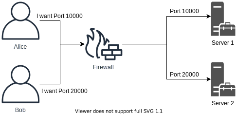
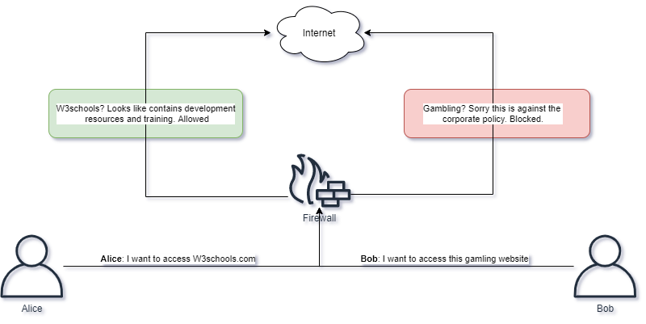
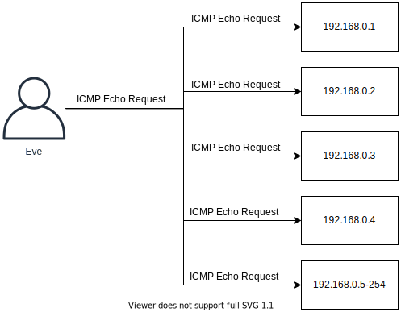
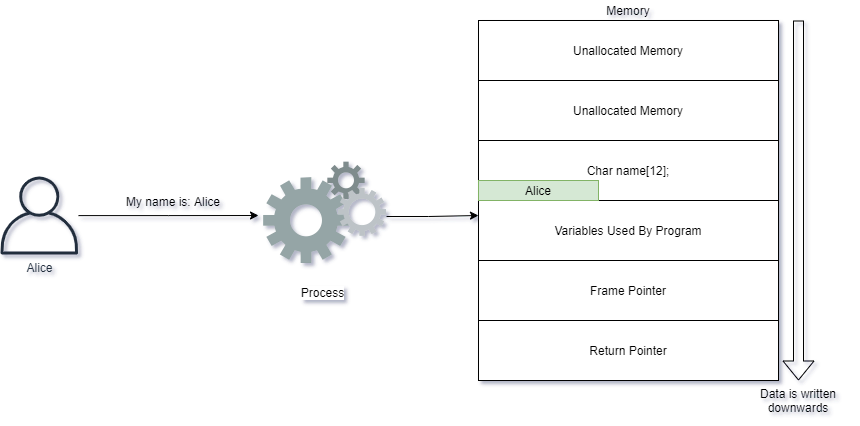
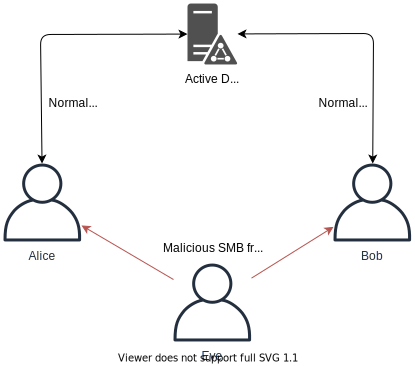
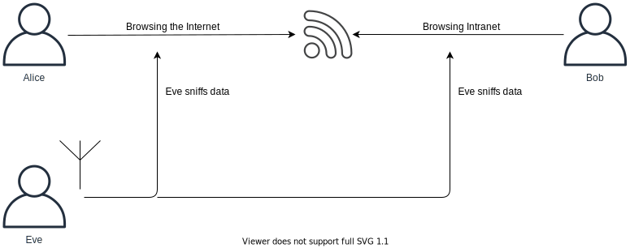
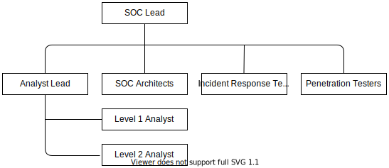

Welcome to this introductory course in Cyber security.
This course serves as an excellent primer to the many different domains of Cyber security.
I have played with the thought of creating a Getting started in Cyber Security Guide for a long time now.
I’m not even sure if you can call it a guide because the topic is so massive.
It’s more going to be something like a guideline for you to follow.
Now, of course, I can only talk from my own experience, and I try to revisit my path retrospectively and start from the beginning.
If everything on my personal journey was necessary to get where I am today, I can’t say for sure.
I can just tell you what I did to get where I am and what I think is most important.
This article will be our starting point. I will create tutorial series revolving around this topic and link them to this article in the future,
so be sure to bookmark this article and check back regularly. You can see this as a mini-curriculum and reference guide for your own studies.
I am in the position of teaching you solid basics, but I am by no stretch of the word an expert in the field.
I know my basics pretty well, and I think I know what’s necessary to get up to a level where you can start working in an actual job and start building your career.
I will show you the way. You need to put in the work.
I want to emphasize that every resource I link in this article is free to use. If I find paid content that is super worthy (like a Udemy course, for example),
I will list it, but the core is free.
I put a high value on free content and free learning, so I create tutorials like those without getting paid (except for Ad Revenue).
You will find many parts throughout this article that says, “Learn this, Learn that…” on some of them, I will link resources. On others, not.
This is purpose. I want to encourage you to learn how to find information independently. It’s all out there.
A big part of working in Cyber Security, like Programming, is using Google or other search engines to find information.
I will also list a couple of books that I personally bought and recommend to anyone. Of course, they are not free either and are optional if you have the money to buy them.
All the Books that I list are well-researched, and all of them are highly recommended by the community.
Well, that’s a question you have to party solve on your own, but let me tell you my perspective and a few facts.
High Demand for Security Professionals everywhere.
It’s a fun field to work in (We will get to that later)
You can Hack things and get paid for it! (Without landing in Jail)
You can feed your Technological Curiosity with Bleeding Edge Technology
You can solve Problems!
The satisfaction you get by breaking into a System successfully
Competitive Salary
Those are just a few things that make Cyber Security interesting for me. Finding a Job, even when you just start out but have a solid foundation, is pretty straightforward.
I get an ungodly amount of Job offers every single week.
This will be a tough one, and it highly depends on your background. If you have worked in IT before, you probably can skip a thing or two.
We try to move through this in the order that I think makes the most sense. You will find “starting to use Kali Linux” pretty late in that list.
But that has a good reason. I eventually add things to this list as time passes, so make sure to check back regularly to stay up to date.
To keep those points as short as possible, I will work with Bullet Points that give you a summary of the things and don’t go over everything in great detail.
The great detail follows in the specific tutorials that I will link in this article later on once I produce them.
Share your thoughts in the Comments
Leave a Comment
CS - CYBER CRIMES
Last update: Dec 10, 2023 by Griffin
Cyber Crime
What is Cyber Crime? Just like regular crime, it also exists on the Internet. Here are some examples of Cyber Crime:
Identity Theft
Online Predators
BEC (Business Email Compromise)
Ransomware
Stealing of sensitive intellectual property
Increasing Crime
Cyber Crime has been increasing regularly every year. Why is Cyber Crime on the rise? Here are some reasons:
Cyber Crime is easy to accomplish
Low risks of getting caught
For little work there is often high returns
Attackers can target thousands of victims
Money laundering is easier with Cryptocurrencies
Challenges like identity theft can have significant consequences on an individual,
causing not only the potential of financial losses but also a lot of personal grief.
The Internet offers many services to facilitate money laundering, usually making it a trivial process. As money is exchanged in cryptocurrency,
services such as tumblers make it hard to track the money.
Tumblers are services which split up cryptocurrency transactions and forward the money through many accounts, with different values,
for thousands of people, making them hard to track.
Cyber Criminals
Who are Cyber Criminals? It can be anyone, but let us discuss some common ones we see in the media all the time:
State-sponsored groups targeting organizations in other countries
Hacking Groups out to target companies to make them pay ransom
Kids in their rooms doing illegal hacking
Note: Cryptocurrency is money represented in digital form instead of physical.
There are many different Cryptocurrencies, some very widespread like Bitcoin, and others smaller and unknown to most people.
These currency models relies on strong cryptography and public ledger systems to keep track of transactions and how much currency is on the market.
Catching Cyber Criminals
Cyber Criminals can stay anonymous with trivial means, and typically easy to avoid getting caught.
When attackers do get caught, it is often because of mistakes made by the attackers themselves, for example as a result of becoming complacent.
There is also a great deal of potential for law-enforcement to use caught cyber criminals to rat out others in the industry.
Law enforcement do, however, have many challenges in tracking down cyber-crime.
You might see attack traffic coming in from a system residing in UK, and when taking down this system, you realize it was being remotely
controlled by e.g. another system in India.
Cooperating with law-enforcements across borders, you might be able to get to the system in India, but only to
realize it was again remotely controlled through e.g. Pakistan.
Share your thoughts in the Comments
Leave a Comment
THE DARKWEB
Last update: Dec 10, 2023 by Griffin
The Dark Web(also called The Dark Net) is a network within the Internet which is only accessible using certain software and protocols.
The Dark Web has many names, for example Tor Network or Onion Router.
Anyone can access to the Dark Web by simply downloading software for it. A popular and very much used browser is the Tor Project's Tor Browser
This is just like any other browser such as Google Chrome or Microsoft Edge, except it can also access special website addresses
which ends in .onion instead of .com and such.
Any traffic sent through Tor Browser is automatically anonymized and encrypted via many different hosts.
The browser also has built-in protection for many kinds of tracking and de-anonymization features.
Accessing The Dark Web
You can access many fun and interesting websites through this browser, also many which co-exist on the regular Internet.
For example if you access the following URL's in Tor Browser, your communications will be fully encrypted and anonymized inside the Dark Web:
The American CIA ("Central Intelligence Agency") - http://ciadotgov4sjwlzihbbgxnqg3xiyrg7so2r2o3lt5wz5ypk4sxyjstad.onion
The Hidden Wiki, a collection of links and places to explore -http://zqktlwiuavvvqqt4ybvgvi7tyo4hjl5xgfuvpdf6otjiycgwqbym2qad.onion/wiki/index.php/Main_Page
Note: Please take care when navigating the Dark Net. The links above will only work when using the appropriate software.
Similar Reads
You may have heard of the dark web, but do you know what it is and how it affects you? Having a baseline understanding of the dark web
can help you protect yourself from risks like identity theft.
Read on for answers to the most common dark web questions.
The dark web is the part of the internet that isn’t visible to search engines.
It’s not accessible by web browsers like Chrome, Safari or Internet Explorer that everyday people use.
It requires a special browser called Tor to access it, and it allows visitors to remain anonymous.
The dark web itself is not illegal, but illegal activity takes place on the dark web. Because visitors can remain anonymous,
it is useful for cybercriminals who want to take part in illegal activities.
For example, a cybercriminal may hack into a website and steal user data (like a credit card number or social security number)
and sell it on the dark web.
Simply being on the dark web is not inherently dangerous; however, the average person doesn’t have a need to be on it.
There are some use cases for the dark web that aren’t criminal.
For example, in some countries with strict governments that prevent access to information online,
citizens use the dark web to seek information and share their views freely.
The real risk is that your personal information may end up on the dark web.
If you protect your data online, you will not need to worry about the dark web.
The deep web is anything on the internet that isn't indexed by a search engine like Google.
For example, content behind a paywall like membership sites or anything the content owner chooses to block from being indexed.
This content can still be accessed by a standard browser.
The dark web is purposefully hidden and requires a Tor browser to access.
There are many steps you can take to protect yourself. Thankfully, there are a few that can be easily and cheaply put in place today.
Create unique and strong passwords for every online account:
This is essential because it makes it harder for hackers to get into your accounts, but it also means if they crack one they don’t have access to any others.
You can use a password generator to create these unique, strong passwords.
Use a password manager: If you have unique passwords for every account, you won’t be able to memorize them all.
You need a password manager to securely store and fill them for you.
Turn on multi-factor authentication (MFA) for any sites that offer it.
Multi-factor authentication requires you to provide an additional form of authentication on top of your password when logging into your account.
Many accounts – like email and social media – offer MFA to help prevent cyber criminals from gaining access.
Use a dark web monitoring service:
Dark web monitoring checks your information against a database of breached credentials and will alert you if your information has been compromised.
This way you can change the passwords for those breached accounts.
LastPass dark web monitoring proactively checks your email addresses against our partner Enzoic’s database of breached credentials.
You will be alerted with an email and an in-product message if your email address has been compromised and which account is at risk.
Cybercriminals hacking into company databases and stealing user data is very common.
You have probably heard of these data breaches in the news.
While each piece of data (like a credit card number) might only be worth a few dollars when they resell it,
this adds up when they’ve stolen thousands or hundreds of thousands of pieces of sensitive information.
To see the full breakdown of how much your data is worth check out our infographic.
If you use dark web monitoring with LastPass, you will receive an email and in-product alert.
Here are some typical signs that someone is abusing your email account:
Strange emails in your sent folder
Unexpected password reset emails
Complaints from your contacts
Unusual IP addresses, devices, and/or browsers detected
Dark web monitoring is a great tool to have in your cybersecurity arsenal.
However, there are additional steps you can take to protect your personal information from cybercriminals and identity thieves.
Re-using passwords is a very common habit that puts you at risk.
If a hacker can figure out the one password, they can access all other accounts that use that password.
If you use your password for social media and online banking, and you click a spammy link on a social media site,
your banking information could be vulnerable if your password is hacked.
WiFi networks can easily be hacked, so leveraging a virtual private network (VPN) will ensure that your internet browsing data stays safe.
You may hear the term “dark web scan” and wonder how it’s possible for a solution to scan the entire dark web – especially if it’s so hard to access and it’s anonymous.
When you hear the term dark web scan , what’s really happening is your credentials (like emails and usernames) are being checked against a database of credentials from known breaches.
Yes. The online security practices of end users affect the safety of the entire business.
Weak and reused passwords can make it easier for hackers to get into a user’s work accounts just as easily as their personal accounts.
LastPass dark web monitoring is available to all LastPass business users, so they can ensure they are keeping themselves safe online.
Share your thoughts in the Comments
Leave a Comment
CS - NETWORKING BASICS
Last update: Dec 10, 2023 by Griffin
Protocols and Networking
It is essential for Cyber Security Professionals to have a solid understanding of how computers communicate.
There is much more happening behind the scenes of computer networks than what can be observed when using applications.
The OSI Model
The OSI ("Open Systems Interconnection") model represents an easy
and intuitive way to standardize the different parts required to communicate across networks.
The model makes it clear what is required to communicate on a network by splitting the requirements into multiple layers.
This is what the OSI Model looks like:
Layer
What does it do?
1-Physical:
The physical infrastructure to transport data
2- Data Link:
Responsible for which physical devices packets should go to
3- Network Layer:
Responsible for which path packets should travel on a network
4- Session:
Capable of maintaining connections
5- Transport:
Data is forwarded to a service capable of handling requests
6- Presentation:
Ensures data is in a usable format
7- Application:
Where humans process data and information
The bottom 3 layers are typically implemented in software within the Operating System:
Layer:
Where it is Implemented.
7- Application:
Software.
6- Presentation:
Software.
5-Session:
Software.
The top 3 layers are typically implemented in hardware within devices on the network, e.g. Switches, Routers and Firewalls:
Layer:
Where it is Implemented.
1-Physical:
Hardware.
2- Data Link:
Hardware.
3- Network Layer:
Hardware.
Layer 7 - Application Layer
The business logic and functionality of the application lies here.
This is what the users use to interact with services across a network. Most developers create applications on the Application Layer.
Most of the applications you use are on the Application Layer, with the complexity of the other layers hidden.
Examples of Lay 7- Application.
SNMP ("Simple Network Management Protocol") - Protocol to read and update network device configurations
FTP ("File Transfer Protocol") - Allows users to transfer files
HTTP ("Hypertext Transfer Protocol") - Enables us to access web applications
There are many applications which uses these protocols like Google Chrome, Microsoft Skype and FileZilla.
Note: You are accessing this class via Layer 7!
Layer 6 - Presentation Layer
Typically an unseen layer, but is responsible of adapting, transforming and translating data.
This is to ensure the application and layers beneath can understand one another.
Encoding Schemes used to represent text and data, for example ASCII(American Standard Code for Information Interchange)
and UTF(Unicode Transformation Format).
Encryption for services, for example SSL ("Secure Sockets Layer") and TLS ("Transport Security Layer")
Compression, for example GZip in use in many implementations of HTTP.
Layer 5 - Session Layer
This layer's responsibility is handling connections between the application and the layers below.
It involves establishing, maintaining and terminating connections, otherwise referred to as sessions.
Common protocols which represent the Session Layer well are:
SOCKS - A protocol for sending packets through a proxy server.BIOS - An older Windows protocol for establishing sessions and resolving names.
SIP ("Session Initiation Protocol") - For engaging in VOIP ("Voice Over IP") communications
IP ("Session Initiation Protocol") - For engaging in VOIP ("Voice Over IP") communication
Layer 4- Transport
The layer which allows applications to be represented on the network.
Some well known applications on this layer:
TCP ("Transmission Control Protocol") - Used for many applications, ensuring stability, control of how much data can be sent at any given time, reliability and more.
UDP ("User Datagram Protocol") - Lightweight and quick protocol use for many services.
QUIC ("Quick UDP Internet Connections") - A protocol designed for faster connections and goes hand-in-hand with the version 2 of the HTTP protocol.
Layer 3- Network
A layer responsible of routing packets between networks via routers.
On this layer, the following protocols reside:
IP ("Internet Protocol") - Used everyday when accessing the Internet. Comes in two versions, IP version 4 and 6.
ICMP ("Internet Control Message Protocol") - Used by network devices and network operators, to diagnose network
connections or for devices to send and respond to error conditions and more.
IPSec ("Internet Protocol Security") - Allows encrypted and secure connections between two network devices.
Layer 2 -Link
Link networks, as the name implies, consist of protocols designed to send packets through the actual links (physical connections) that network nodes are connected to.
A simpler way of thinking of it is that the Link Layer is responsible for moving data from physical over to logical (to the network layer).
Protocols on this layer include:
Ethernet - An essential protocol used by most operating systems when connecting to networks using a physical cable.
Wi-Fi ("Wireless Fidelity") - For accessing networks via radio signals. It uses a family of protocols called IEEE 802.11.xx
NDP ("Neighbor Discovery Protocol") - IP version 6(IPv6) uses this protocol on the Link Layer to gather information required to communicate via IPv6
Layer 1- Physical
Physical layer represents the signaling which allows bits and bytes to transfer between a physical medium.
It can be transferred via radio or signals over a cable, using electrical signals or light, for example fiber.
Examples of the Physical Layer protocols includes:
CAN Bus ("Controller Area Network") - Used in microcontrollers and other devices to communicate to other similar devices, not involving a computer.
Often used in ICS ("Industrial Control Systems").
Ethernet Physical Layer - Used by Ethernet on the physical layer to send signals with speeds up to many gigabits of traffic per second.
Bluetooth Physical Layer - Bluetooth also has its own specifications on how radio signals should be sent and received.
Share your thoughts in the Comments
Leave a Comment
CS - NETWORK LAYER
Last update: Dec 10, 2023 by Griffin
IP - The Internet Protocol.
IP is used to communicate across networks, not just across physical links, but between networks of routers.
The addressing scheme in use is either IPv4 ("IP Version 4") or IPv6 ("IP Version 6").
IP networks can be broken into different sections, often called subnets. This is accomplished by adding an extra piece of information, together with the IP address, called a netmask.
The netmask dictates how large a network is and which packet is routed within the network and which should be routed outside of the network.
Netmasks can be represented via decimal numbers or with a slash notation.
When using slash notation, the slash follows the systems IP address. Here are some examples:
IP Address
Slash Notation
Netmask
10.0.0.1
/8 - Example: 10.0.0.1/8
255.0.0.0
172.16.1.1
/12 - Example: 172.16.1.1/12
255.240.0.0
192.168.0.1
/16 - Example: 192.168.0.1/16
255.255.0.0
192.168.0.1
/24 - Example: 192.168.0.1/24
255.255.255.0
Some IP networks are reserved for only a certain kind of traffic. The IP addresses in the table above are reserved for
only internal organizational use, meaning they should not be routed on the Internet.
These kinds of IP addresses are commonly referred to as RFC1918 addresses.
Different Networks
Let us take a look at different networks within RFC1918 and how large the networks are:
10.0.0.0/8 - More than 16 million IP addresses
172.16.0.0/12 - About 1 million IP addresses
192.168.0.0/16 - 65534 IP addresses
IP segments can be further broken up into smaller and more granular networks.
Each network has a reserved address for broadcasting traffic to every host in the network, this is called the broadcast address.
Broadcasting data means sending data to everyone on the network instead of sending to just a single host.
There are many applications and protocols which rely on broadcasting traffic in order for them to work.
For each network segment the broadcast is always last IP address in the network.
For example in the network 192.168.0.0/24 network, the broadcast address is 192.168.0.255.
The smallest netmask possible is 255.255.255.255, represented as /32. This network only has one IP address.
If traffic needs to be sent back to the host, e.g. for communications between applications, it is sent to the localhost address.
This address is always 127.0.0.1 and is a /8 network.
In IP networks the traffic is routed by a router. A router is a networking device which understands the IP format and can forward packets between networks.
This is different than a switch as the switch forwards data within a network, while the router forwards between networks.
Packets on the network has headers which describe many of the important details we already discussed within the IP protocol.
IPv4 Header looks like this:
Image Credits: By Michel Bakni - Postel, J. (September 1981) RFC 791, Internet Protocol, DARPA Internet Program Protocol Specification,
The Internet Society, p. 11 DOI: 10.17487/RFC0791., CC BY-SA 4.0,
https://commons.wikimedia.org/w/index.php?curid=79949694
The Source Address is the IP address of the system who is sending the packet, and destination is to whom the packet is intended.
There are also other fields in the header which is used by the many features of the IP protocol, but which are outside the scope of this introduction class.
You can check your IP address on Windows by running the command ipconfig within a Command Line Window. On Linux this is done with the ip addr show or ifconfig command.
When a computer needs to communicate to something which can not be found on the LAN, it sends traffic to the default gateway as per how the system is configured.
The default gateway being a router which is capable of forwarding the traffic to the destination IP address.
NAT ("Network Address Translation")
NAT allows a system accepting connections on a public IP address to map those requests to an internal RFC 1918 IP address or vice versa.
Systems which do NAT'ing are typically firewalls and routers.
A typical implementation of NAT is where the external IP address is used as a front for multiple internal IP addresses,
and the destination port number is used to decide which server the data should be sent to.
This allows internal IP addresses to receive traffic from external systems.

Another very common implementation is allowing internal IP addresses to access the internet with an external IP address.
The NAT keeps track of connections from internal to destination addresses and forwards traffic across the connections.
NAT can be configured in many ways, but in this class you we do not go into more details of the method.
Note: NAT allows network engineers to be more flexible with their deployments, allowing many different use-cases to unfold.
IPv6 - IP Version 6
IP version 6 is the latest standard for IP and was made to support more IP addresses. Instead of using 32 bits of addressing for IP addresses, 128 bits is used.
This allows for enough IP addresses for the foreseeable future while IPv4 has already run out.
IPv6 addresses uses 8 groups of of 4 hexadecimal numbers. An IPv6 address look like this: 2a00:1450:400f:80a::200e:.
Notice it does not have have the 8 groups of 4 hexadecimal numbers. This is because IPv6 addresses can be shortened via simple rules:
Leading 0's can be shortened
Double colon (::) can be used to represent a continuous string of 0's.
The expanded IPv6 address is: 2a00:1450:400f:080a:0000:0000:0000:200e.
The localhost can be reduced into ::1 and ::.
IPv6 has networks, i.e. subnets, just like IPv4 has.
The IPv6 header looks like this:
We can see a much simpler header with a lot more room for IP addressing.
IPv6 is used more and more, and there is built in support for this protocol in many tools.
For example with ping we can switch between IPv4 and IPv6 with the -4 and -6 flag respectively.
Run ipconfig and see if you see any IPv6 addresses. If you have IPv6 enabled, try ping -6 google.com and ping -4 google.com.
See how the command allows us to use either IPv4 or IPv6?
Note:If you do not have IPv6 today, there are many public cloud services which will grant you a
public IPv6 address today which you can use to experiment and explore with.
ICMP
ICMP is often associated with Ping and Traceroute. ICMP can be used for other things, such as ask a node for its time referred to as an ICMP Timestamp request.
An ICMP Timestamp request simply allows e.g. a Router to ask another Router to synchronize their time, an important attribute in network communications.
A common tactic for attackers to check if systems are available on a network, is to conduct a Ping Sweep.
The goal of such activity is to make the target device in a network range reply to ping requests so that the attacker knows it is available.
This approach is naive as many systems by default block incoming pings.
TRACEROUTE
Tracerouting is a way to determine which routers are involved in sending a packet from system A to B. Knowing which routers our packets take can
be useful both better understanding our networks and also in understanding the attack surface.
A router is responsible for routing the package in the right direction. Imagine this as driving on a road, where road signs at
intersections guide you to the destination. These signs at intersections represent routers.
Traceroute identify these signs and intersections and tells you how far away they are, measured in milliseconds (ms).
The IPv4 TTL and IPv6 Hop Limit headers have the same function. Every router who routes a packet will decrement this value by 1, and if the value reaches 0 the router
will discard the packet and return an ICMP Time Exceeded packet to the sender.
To perform a traceroute on Windows:
Tracert google.com
To perform a traceroute on Linux (not installed by default):
Traceroute google.com NB: If Traceroute is not installed in your Linux, consider installing it first using the code below;
"Sudo apt install traceroute"
The process of tracerouting via these tools is simple:
The operating system sends a packet google.com, the TTL value is set to 1.
The packet is routed on the network, and the first router decrements the TTL by 1, leaving it at 0.
This causes the router to drop the packet and send "ICMP Time Exceeded" back to the source.
The client increases the TTL 1, allowing the packet to be routed through one additional hop.
This process is repeated, increasing the TTL with 1 until the destination has been reached.
DNS (Domain Name System)
DNS is used to map applications, via names, to IP addresses.
For example if you want to use your browser to visit http://google.com the browser must first make a request
to a DNS server to resolve the IP address behind google.com
Systems are typically configured with a primary and secondary domain name server.
These settings can be configured manually or be provided by a DHCP server.
This allows our computer systems to reach a DNS server for it to resolve for us.
The DNS server is then responsible for resolving the request. It will then proceed to check its own cache to see if it already knows the answer.
Each DNS answer can be cached, that is stored temporarily to speed up future requests, for a certain TTL ("Time To Live").
The TTL is typically set to a couple of minutes, for example 10 minutes.
If a DNS server does not have a answer in its cache it will then proceed to check who is responsible for giving the answer.
This is done via a recursive process which involves asking a hierarchical system of name servers which inevitably will make the DNS request to end up at the Authoritative Name Server.
You can try to do a DNS lookup with Windows or Linux now. From a command line terminal on Windows type nslookup w3schools.com , or on Linux type dig w3schools.com.
You should see output like this:
The IP address of w3schools.com can be seen in the ;; ANSWER SECTION.
When this screenshot was captured, the IP address behind the w3schools.com name was 66.29.212.110.
The Authoritative Name Server is the DNS server which is responsible for giving the definitive answer to a question.
For example the IP address of google.com will be answered by their authoritative name server, and we can see this server by querying for it:
Finding authoritative name server on Windows:
nslookup -type=SOA google.com
Finding authoritative name server on Linux:
dig -t SOA google.com
DHCP (Dynamic Host Configuration Protocol)
As the name implies, the DHCP protocol allows any system on a network to reach out to a server and receive a configuration.
Such configuration typically implies receiving IP address and network range, default gateway and DNS servers.
DHCP allows for easy management of clients joining and leaving a network.
If you are curious if you are using DHCP right now you can type ipconfig /all on a Windows system and look for "DHCP Enabled: Yes" in the output.
Your computer might have multiple network interfaces
VPN (Virtual Private Network)
A VPN is a system which enables two system to establish encrypted forms for communication, enabling network traffic to be encrypted in transit.
Many VPN's is a client to server architecture, allowing the client to access multiple services behind the VPN.
VPN's hosted by your work place is also likely to provide access to resources otherwise only accessible from the inside.
Some VPN services are designed for user privacy and encryption for data in transit.
These services enables users to send network data via the VPN, effectively masquerading the users IP address when navigating the Internet.
It is generally good practice to use VPN's to secure your network communications, however we should not use any kind of VPN service.
Free VPN services can sometimes be malicious, inspecting, reading and storing your sensitive data.
Share your thoughts in the Comments
Leave a Comment
CS - NETWORK TRANSPORT
Last update: Dec 10, 2023 by Griffin
In-Depth Transport and Links Layers
Computer systems often needs to talk to other systems; this is done by putting them on the same network.
Several different technologies are in place to enable computers to talk over different kinds of networks.
In this section we will go deeper into the protocols which are used in most networks.
The networks we are using consists of multiple protocols, some which are featured in this class.t
There are also many other protocols in use in networks, all which have the potential of having security risks associated with them.
TCP (Transmission Control Protocol)
Just like IP uses IP addresses for addressing, TCP and UDP uses ports.
A port, as indicated with a number between 0 and 65535, dictates which network service should process the request.
In the picture below we can see a TCP packet and how it would look like for anyone inspecting traffic on the network.
We can see the graphic showing 16 bits for both source and destination ports, this is the same for for UDP.
The Sequence and Acknowledgement numbers are used in the three-way handshake and to reliably transfer data.
We can also see the control bits used to indicate what kind of packet it is.
The other headers also play an important part, but outside of the security course.
TCP 3-WAY HANDSHAKE
TCP uses a three-way handshake to allow two systems to engage in communications.
The handshake uses 32 bits of PRNG ("Pseudo Random Number Generator") numbers to establish the handshake.
The handshake enforces that both parties intends to communicate.
Here is a graphic to illustrate:
Explanation on how TCP engages in communications:
Client initiates the communication by sending a packet with the control bit SYN set in the header,
a PRNG number in the Sequence number field and a target destination port.
The Network Layer (Layer 3) allows the packet to be sent to a remote system. This packet is referred to as a SYN packet.
Server receives the packet, reads the Sequence Number from the Client and crafts a response.
The response sets the Acknowledgement field with the Sequencer number of the client with the number 1 added to it.
Furthermore the response contains the controls bits SYN and ACK set and the Sequence number is set to the Servers PRNG number. This packet is referred to as a SYN/ACK packet.
The Client receives the SYN-ACK packet and to complete the handshake returns a packet with the ACK control bit set.
The final packet also confirms the PRNG number from the Server by returning it in the Acknowledgement field of the header.
This process is commonly referred to as the SYN, SYN/ACK, ACK 3-way handshake.
In the following picture we can see two hosts performing the 3-way handshake:
The screenshot shows the tool Wireshark being used to capture and inspect packets.
Wireshark is a very good utility because it allows us to visualize packets and inspect them more in-depth.
The screenshot shows 3 packets representing the 3-way handshake. Notice the source and destination columns representing the two parties communicating.
The Info field shows source and destination port, including (within the square brackets) the SYN, SYN/ACK and ACK.
The next screenshot shows data being communicated between the parties after the 3-way handshake.
The data inside of the TCP packet has been highlighted near the bottom of the picture.
SPOOFING TRAFFIC
There are few restrictions on networks today for anyone to create packets as they desire.
Anyone can create packets with any of the fields of the headers set to whatever value they desire.
This is called spoofing, allowing attackers to send traffic on behalf of others.
TCP has security built into the protocol, but it relies on the strength of the PRNG ("Pseudo Random Number Generator") number generators.
If the Sequence numbers of the communicating parties can be guessed, the security of TCP can be compromised in the sense that an attacker can engage in spoofed communications via TCP.
Many protocols are easily spoofed, but TCP offers some resiliency against this. Protocols such as UDP and ICMP does not offer similar protection.
Spoofing packets is typically done by attackers with root / system capabilities, i.e. the highest privileges on the Operating System.
The reason being that Operating Systems enforces the use of API's which forces the user to conform to the rules of communications as specified in RFC's ("Request For Comments").
If the attacker does not have the highest privileges, they will not be able to craft their own packets on the network.
UDP (User Datagram Protocol)
UDP is used for traffic which does not need the resilience and security of TCP, typically applications such as VOIP,
but in the modern world more applications are using UDP to support fast packet transfer with resiliency and security built into the higher levels of the OSI model;
QUIC is an example of this.
Looking at the UDP Header we can see the same Source and Destination ports in use, but no Sequence numbers or Control bits.
The protocol has much less overhead, leading to faster transmission of data.
Because UDP does not have features such as the 3-Way-Handshake, UDP can be easily spoofed.
Switched Networks
Systems are connected to a LAN ("Local Area Network") through a Switch. Switches uses MAC ("Media Access Control") addresses for addressing, not the more well-known IP address.
Switches forward traffic across Local Area Networks, i.e. your home-network or within branches of your organization.
MAC Addresses are designed to be unique, but anyone can change their MAC Address as long as they have administrator rights.
The MAC address defined by 6 octets, for example: FC:F8:AE:12:34:56
The first three octets represent the organization which manufactured the device communicating, called OUI ("Organizational Unique Identifier").
The above MAC address is assigned to Intel Corporate.
You can search for MAC Addresses in many places, for example: https://www.adminsub.net/mac-address-finder/intel.
The last three octets is determined by the manufacturer.
ARP (Address Resolution Protocol)
ARP ("Address Resolution Protocol") is the protocol which allows computer systems to know which MAC address belongs to which IP address.
If the traffic has to be routed, the computer system will forward traffic to the Default Gateway configured on the system.
ARP, like DNS, is a protocol which resolves one address into another.
Every time a system tries to communicate to an IP address which is on the LAN it will check its ARP cache to see if has recently been resolved.
You can inspect your own ARP.
Simply run the command arp -a on both Linux or Windows. This reveals which systems your system has recently communicated with.
Alice: Does anyone know the MAC address of 192.168.10.10?
Bob: Sure thing Alice, here is my MAC Address.
VLAN (Virtual Local Area Network)
VLAN, often called Private VLAN's, is a way for a Switch to embed tags (or a VLAN ID) within the Frame.
Multiple Switches can then make sure that computer systems on the LAN can only communicate to certain other systems, i.e. other systems on with the same VLAN ID.
Share your thoughts in the Comments
Leave a Comment
CS - FIREWALL SYSTEMS
Last update: Dec 10, 2023 by Griffin
Firewalls are a central architectural element to any network.
They are designed to keep out all network traffic, except traffic which we allow.
Firewalls operate on Layer 4, typically controlling TCP and UDP access to internal assets.
Next-Generation Firewalls operate on all the layers of the OSI model, including Layer 7.
Traffic entering a network, e.g. through a Firewall, is called ingress traffic. Traffic leaving is called egress.
Layer-4-Firewall
The traditional Firewall is a Layer 4 Firewall with features such as:
NAT
Routing
Blocking or Allowing traffic
Track active network connections
Support VPN connections
Note: These Firewalls are typically cheaper and offers more throughput on the network than a more modern Next-Generation Firewall.
NGFW (Next Generation Firewall)
A modern Firewall has capabilities that range much wider than a a Layer 4 Firewall. These capabilities are typically security features.
A NGFW Firewall can also track active network connections, but is also typically capable of tracking:
Locations via geo-location databases.This means the Firewall can make blocking or allow actions based on the location of users.
Location services are not always accurate and can often easily be bypassed using VPN services or by using other services like jump stations for attacks.
Users
Applications
Sessions
Ports and services
IP addresses
Other features of a NGFW includes:
Identify and control applications on the network.
Often offers simple and intuitive management.
Supports protecting against known threats via ("Intrusion Prevention System").
Potential to detect and prevent unknown threats via sandboxing solutions.
Offers a potential to manage unknown traffic, e.g. traffic which cannot be attributed to an application.
Capabilities to terminate and inspect encrypted traffic.
Can control users, not just system via respective IP addresses.
Note: Which features your NGFW comes with often greatly depends on which licenses have been purchased and the capacity of the hardware running the Firewall.
Firewall Administration
A Firewall can typically be administered via a proprietary management application,
or via a web-browser accessing the Firewalls management via HTTP.
Management ports to Firewalls, including other management services of an organization, should ideally be segmented away from regular user access.
Ideally the segmentation of management services is connected to an organizations user directory, for example Active Directory for Windows environments.
Segmentation
Firewalls can segment traffic between hosts and systems into segments, sometimes called zones.
Each segment holds services which are allowed to communicate between one another.
Any connection to or from the segment should be carefully controlled by the Firewall, preventing any unauthorized connections to make successful connections.
Smaller segments offer more segregation, but requires more management.
Without any segmentation, users and systems can talk directly to each other without the Firewalls enforcement. This is called a flat network.
Adding more segmentation we can envision segments representing services, where each segment is a service provided in the organization.
Each segment could contain the different servers responsible for making the service operational.
Communications within the segment is allowed, but any access in and out from the segment is controlled by the Firewall.
Another segmentation idea would be to control segments based on their functions,
for example clustering web applications within a segment with other web-applications, databases within one segment and other kinds of services within their segment.
Note:A very common user directory is Microsoft's Windows Active Directory.
It holds information about which users, computers and groupings the organization holds.
Any connection to or from the segment should be carefully controlled by the Firewall, preventing any unauthorized connections to make successful connections.
Smaller segments offer more segregation, but requires more management.
Without any segmentation, users and systems can talk directly to each other without the Firewalls enforcement. This is called a flat network.
Adding more segmentation we can envision segments representing services, where each segment is a service provided in the organization.
Each segment could contain the different servers responsible for making the service operational.
Communications within the segment is allowed, but any access in and out from the segment is controlled by the Firewall.
Another segmentation idea would be to control segments based on their functions,
for example clustering web applications within a segment with other web-applications, databases within one segment and other kinds of services within their segment.
Note:A very common user directory is Microsoft's Windows Active Directory.
It holds information about which users, computers and groupings the organization holds.
The best and most secure kind of segmentation is called zero-trust architecture,
forcing all systems on the network to explicitly be allowed to communicate to different services.
To ease management of Firewall rules, the Firewall management is ideally connected to the organizations user directory.
This can allow Firewall administrators to create careful rules based on employee responsibilities,
allowing the organization to add and remove permissions which are applied on the network without asking the Firewall administrators for changes anytime there is a role change.
This is sometimes called user-based policy control. Examples include:
IT-Administrators should be able to use management protocols to the different services.
HR employees should be allowed to access HTTPS to the HR platforms.
Helpdesk employees can only access helpdesk related services.
Unrecognizable users can be identified and provisioned accordingly.
Note:A very common user directory is Microsoft's Windows Active Directory.
It holds information about which users, computers and groupings the organization holds.
IPS (Intrusion Prevention System) and IDS (Intrusion Detection System)
Sometimes IPS and IDS systems are deployed as stand-alone systems on the network, but very often they are included in a NGFW.
IPS and IDS systems have signatures, algorithms and heuristics to detect attacks on the network or host.
An IDS or IPS deployed on a host is called a HIDS ("Host Intrusion Detection System").
In this course the term IDS and IPS is used interchangeably as the difference between them is often just a matter of configuration of how they operate.
An IPS system is positioned in such a way it can detect and block threats, while an IDS system is only capable of detecting threats.
IPS systems can be used to detect and block attackers and often rely on frequent updates and inspection in encrypted traffic.
Note:A very useful feature of IDS and IPS is the frequent updates of new signatures of developing threats from the vendors.
This allows defenders some reassurance that new threats will be blocked as the firewall is updated with new updates.
Content and Application Filtering
The Firewall can make attempts in understanding which applications and content is traversing the network.
Such detection can further activate other security features like IPS to protect the systems between the Firewall.
URL Filtering
NGFW can also protect content accessed via HTTP. The Firewall can look up domains in a database containing lists of domains and respective categorization.
Firewall can then enforce only acceptable categories of domains are allowed by users, for example news is allowed while gambling is not.
Elements such as domain age and validity could also be checked, preventing users from visiting domains which has recently been created and not yet categorized,
or checking for fraudulent activities by analyzing the content of the domain.
Instead of rejecting access to websites, the Firewall could intercept the request and send the user to what is called a captive web portal.
On this portal the user could be warned about immediate danger or the violation of company policy in e.g. visiting unacceptable content.
In some cases you could allow the user to provide a reason why they need to access the content, then let them continue if they have provided a reason.
Categories within domains can be many, for example websites hosting content related to:
Hacking
Nudity
Violence
Phishing
Dating
Instant Messaging
Entertainment
Anonymizing services

Application
The Firewall can try to determine which applications are in use, not just the protocols.
Many protocols are capable of carrying other applications, for example HTTP can hold thousands of different applications.
A Firewall can try to decode the network streams on Layer 4 and try to determine the content which is presented on Layer 7.
A screenshot shows what a user could see when an application has been blocked.
Control Control
As Applications are being identified, the Firewall could try to reveal specific content within the applications,
for example content being downloaded:
Word documents
Executables
Source-code
Scripts
In such files, the Firewall can try to identify malware, proprietary and confidential information not supposed to leave the network and much more.
The Firewall could support many different protocols and the content running through them, for example:
HTTP
SMB
FTP
IMAP & POP3
SMTP
SandBoxing
In this context, sandboxing means to have a platform execute files, which are may be malicious.
The sandbox records and monitors the activity of the file to see if it is malicious or not.
Sandboxing typically allows the Firewall to forward executable files to this platform and prevent
users from downloading the file until a verdict has been made whether it is malicious or not.
A modern sandbox has capabilities to run files in multiple different platforms, for example:
Windows 7,8 and 10.
Android phones.
Linux
Files which are interesting to execute and explore in a sandbox is more than just an executable file.
Many files are capable of performing malicious actions on the operating system of our users:
ZIP files with content to run
Office documents
PDF files
Java applications
JavaScript
Screensavers
There are many sandboxes online you can try yourself, outside of what a NGFW can provide:
Many Firewalls support installing certificates which allows for decryption of traffic.
If content is decrypted, content can then be inspected for threats.
Decryption can take place on Egress or Ingress traffic, or both. For Ingress traffic the Firewall could protect servers against incoming traffic.
Egress traffic allows the Firewall to protect users and systems needing to communicate outbound.
The Firewall will often avoid decrypting traffic such as health care and financial data as this may have privacy and other implications.
Decryption of traffic requires more effort from the organization to distribute keys to clients which is used by the firewall to decrypt traffic.
Note:Remember Egress and Ingress traffic? Egress means traffic leaving the network, while Ingress means traffic arriving to the network.
Unknown Traffic
Some traffic can not be decrypted or understood fully by the Firewall. Many reasons can apply, for example a proprietary application sends data which the Firewall does not know of. '
Such traffic can also be categorized as Unknown.
A Firewall administrator should consider blocking such applications, especially from networks which are considered high-risk.
WAF (Web Application Firewall)
While Firewalls can do a decent job, they often lack full understanding of what a protocol is capable off.
Because of such, protocol specific firewalls are also developed where WAF is one of the more common ones.
A WAF allows more features specific to the HTTP protocol than a regular Firewall, making it more capable of stopping threats.
While a WAF tries to do a good job in blocking threats on HTTP, it often provides other very useful utilities for organizations making them
very viable for much more than just blocking threats. Here are some examples:
WAF can help build redundancy, that is having multiple servers to present the same service.
This allows for for organizations to have a service in a higher available modus, allowing them to put a server offline while the other servers
are still capable of serving users trying to access the service.
This is useful as concepts like patching often requires you to restart the service, and the redundancy allows users to still access the service.
A WAF can help enforce best practice security rules, for example a single place to maintain and enforce encryption,
multi-factor authentication and other concepts which this class covers.
It can be used to develop a single front and protection mechanism for multiple web-servers which are behind the WAF.
Note: WAF's are a much more specialized firewall to counter threats on the HTTP protocol. It also typically holds functionality which is very convenient for administrators.
Share your thoughts in the Comments
Leave a Comment
CS - WEBSITE APPPLICATIONS
Last update: Dec 10, 2023 by Griffin
Web Applications are integral to almost everything we do, whether it is to access the Internet or to remotely control your lawnmower.
In this introduction class we will cover the basics of web application security.
The HTTP Protocol
HTTP is the carrier protocol which allows our browsers and applications to receive content such as HTML ("Hyper Text Markup Language"),
CSS ("Cascading Style Sheets"), images and videos.
URLs, Query Parameters and Scheme
To access a web application we use a URL ("Uniform Resource Locator"), for example:
https://www.google.com/search?q=griffintechsolutions+cyber+security&ie=UTF-8
The URL to google.com contains a domain, a script being accessed and Query Parameters.
The script we are accessing is called /search. The / indicates it is contained in the top directory on the server where files are being served.
The ? indicates the input parameters to the script and the & delimits different input parameters. In our URL the input parameters are:
q with a value of griffin tech solutions cyber security
ie with a value of UTF-8
The meaning of these inputs is up to the webservers application to determine.
Sometimes you will see just / or /? indicating that a script has been setup to serve to respond to this address.
Typically this script is something like an index file which catches all requests unless a specific script is specified.
The Scheme is what defined the protocol to use. In our case it is the first part of the URL: https.
When the scheme is not defined in the URL it allows the application to decide what to use. Schemes can include an entire array of protocols such as:
HTTP
HTTPS
FTP
SSH
SMB
HTTP Readers
The HTTP protocol uses many headers, some custom to the application and others well defined and accepted by the technology.
Example request to http://google.com
GET /search?q=w3schools+cyber+security&ie=UTF-8 HTTP/1.1
Host: google.com
User-Agent: Mozilla/5.0 (Windows NT 10.0; Win64; x64) AppleWebKit/537.36 (KHTML, like Gecko) Chrome/87.0.4280.88
Safari/537.36
Accept: image/avif,image/webp,image/apng,image/*,*/*;q=0.8
Referer: https://griffintechsolutions.com/
Accept-Encoding: gzip, deflate
Cookie: cookie1=value1;cookie2=value2
The request header specifies what the client wants to perform on the target webserver.
It also has information regarding if it accepts compression, what kind of client is accessing and any cookies the server has told the client to present.
The HTTP request headers are explained here:
Header
Explanation
GET /search... HTTP/1.1
GET is the verb we are using to access the application. Explained in detail in the section HTTP Verbs.
We also see the path and query parameters and HTTP version
Host: Google.com
This header indicates the target service we want to use. A server can have multiple services as explained in the section on VHOSTS.
User User-Agent
A client application, that is the browser in most cases, can identify itself with the version,
engine and operating system
Accept
Defines which content the client can accept
Referer: griffintechsolutions.com/
If the client clicked a link from a different website the Referer header is used to say from where the client came from
Accept-Encoding: gzip, deflate
Can the content be compressed or encoded? This defines what we can accept
Cookie
Cookies are values sent by the server in previous requests which the client sends back in every subsequent request.
Explained in detail in the section State
With this request, the server will reply with headers and content. Example headers are seen below:
HTTP/1.1 200 OK
Content-Type: text/html
Set-Cookie:
The response header and content is what determines what we will see in our browser. The HTTP response headers are explained as following:
Header
Explanation
HTTP/1.1 200 OK
The HTTP Response code. Explained in detail in the HTTP Response Codes section
Content-Type: text/html
Specifies the type of content being returned, e.g. HTML, JSON or XML
Set-Cookie
Any special values the client should remember and return in the next request
HTTP Verbs
When accessing a web application the client is instructed on how to send data to the web application.
There are many verbs which can be accepted by the application.
!Verb
Used for...
GET
Typically used to retrieve values via Query Parameters
POST
Used to send data to a script via values in the body of the Request sent to the webserver.
Typically it involves creating, uploading or sending large quantities of data
PUT
Often use to upload or write data to the webserver
DELETE
Indicate a resource which should be deleted
PATCH
Can be used to update a resource with a new value
These are used as the web application requires. Restful (REST)
web services are especially good at using the full array of HTTP Verbs to define what should be done on the backend.
HTTP Response Codes
The application running on the webserver can respond with different codes based on what occurred on the server side.
Listed are common response codes the webserver will issue to the client which security professionals should know about:
Code
Explanation
200
Application returned normally
301
Server asks client to permanently remember a redirect to a new location where the client should access
302
Redirect temporarily. Client doesn't need to save this reply
400
The client made an invalid request
403
The client is not allowed to access this resource. Authorization is required
404
The client tried to access a resource which does not exist
500
The server errored in trying to fulfill the request
REST
Rest services, sometimes called RESTful services, employ the full force of HTTP Verbs and
HTTP Response Codes to facilitate the use of the web application.
RESTful services often uses parts of the URL as a query parameter to determine what happens on the web application.
REST is typically used by API's ("Application Programming Interfaces").
REST URLs will invoke functionality based on the different elements of the URL.
An example REST URL: http://example.com/users/search/griffintechsolutions
This URL will invoke functionality as part of the URL instead of Query Parameters. We can decipher the URL as:
Parameter
Comment
Users
Accessing the users part of the functionality
Search
Accessing the search feature
Griffin tech solutions
The user to search for
Sessions and State
There is no built in way for a server to identify a returning visitor in HTTP.
For a webserver to identify the user, a secret value must be communicated to and from the Client in each request.
This is typically done via Cookies in headers, however other ways are also common such as via GET and POST parameters or other headers.
Passing state via GET parameters is not recommended as such parameters are often logged on the server or in intermediaries such as a proxy.
Here are some common Cookie examples which allows the application on the webserver to control sessions and state:
PHPSESSID
JSESSIONID
ASP.NET_SessionID
These values represent a certain state, often called a session, on the server. This state represents things like:
What user you have logged in as
Privileges and authorizations
It is important that session value, sent to the Client, can not be easily guessed or otherwise identified by others.
If they could, an attacker could then present themselves as other users on the web application.
State can also be saved on the client.
This involves the server sending all the states to the client and relies on the client sending back all the items.
Such implementations relies on encryption to check the integrity of the state the client is claiming.
Examples of implementations using this is listed below:
JWT ("JSON Web Tokens")
ASP.Net ViewState
You are using cookies to take this class! You can inspect these cookies in your web browser by opening up the developer tools.
This is done by hitting F12 within the browser, opening up the developer tools window.
Within this window you should be able to find the correct place where your cookies are stored.
In Google Chrome, the cookies were identified in the Application tab above.
Note: Can you think of why the cookies have been masked away in the screenshot so you cannot read them?
Virtual Host
One webserver can process many applications via Virtual Hosts, often abbreviated as Vhosts.
To facilitate access to other Virtual Hosts the web server typically reads off the Host header of the client request,
and based on this value sends the request to the correct application.
URL Encoding
For an application to safely transfer content between the server and client,
some characters must be encoded to ensure they do not impact the protocol.
To preserve the integrity of the communications, URL encoding is used.
URL Encoding replaces unsafe characters with a % and two hexadecimal digits. For example:
Percentage is replaced with %25
Space is replaced with %20
Quote is replaced with %22
An excellent tool to perform text analysis and run operations such as URL Decoding is CyberChef.
You can try it out in your browser here: https://gchq.github.io/CyberChef/
To support dynamic content, browsers use the scripting language JavaScript.
This enables developers to program solutions which will run on the client, enabling more interactive and "alive" web-content.
JavaScript is also involved in many attacks against web-applications and client applications such as browsers.
Encryption with TLS
The HTTP protocol does not support encryption for data-in-transit, hence a wrapper around HTTP is added for encryption support.
This is indicated with a S following HTTP, i.e. HTTPS.
The encryption used to be SSL ("Secure Sockets Layer"), but has since been deprecated.
Instead TLS ("Transport Layer Security") is typically used to enforce encryption.
Share your thoughts in the Comments
Leave a Comment
CS - CYBER ATTACKS
Last update: Dec 10, 2023 by Griffin
Cyber Security is a procedure and strategy associated with ensuring the safety of sensitive information, PC frameworks, systems,
and programming applications from digital assaults.
Cyber assaults is general phrasing that covers an enormous number of themes, however, some of the common types of assaults are:
Altering frameworks and information existing in it
Abuse of assets
Unapproved access to framework and getting to delicate data
Jeopardizing typical working of the business and its procedures
Utilizing ransomware assaults to scramble information and coerce cash from casualties
The assaults are currently turning out to be increasingly inventive and complex that is equipped for disturbing security and hacking of frameworks.
So it’s tiring for the business and security expert to defend against these assaults.
As indicated by Accenture’s 2019 “Cost of Cybercrime” study, there has been a 67 percent expansion in security attacks in the course of most recent five years.
The absolute estimation of danger emerging from these digital wrongdoings is pegged at USD 5.2 trillion throughout following five years.
The intentions of hoodlums can be as straightforward as acquiring your budgetary subtleties and as deadly as breaking data sets containing basic individual
recognizable data (PII) of clients, assaulting the foundation to spread malware, and so forth.
It will be appropriate to examine significant classifications of cyber attacks, and why a one-size-fits-everything approach doesn’t help in countering them.
Some basic Cyber attacks are:
1. Phishing: Phishing is a fraudulent action of sending spam emails by imitating a legitimate source.
At its center, phishing abuses human motivations through alluring message or offer.
Aggressors as a thumb of rule resort to phishing assaults by focusing on huge gatherings and subsequently increase the odds of probably few targets succumbing to assault.
A commonplace case of phishing assault includes aggressor mimicking individual or foundation and sends
messages to clueless targets requesting prompt assistance with connection appended to correspondence.
Unaware client taps on connection, which takes them to phony site that appears to be like real site. Individual, uninformed of snare,
falls into it and winds up offering individual subtleties to aggressor,
who at that point ransacks client even before they understand that they have been assaulted.
Social Engineering attacks
Social engineering is now common tactics used by cybercriminals to gather user’s sensitive information.
Social engineering assaults come in wide range of structures and can be performed in any place where human collaboration is included.
Coming up next are five most basic types of advanced social engineering attacks. Social engineering assaults occur in at least one stage.
A culprit initially researches proposed casualty to accumulate fundamental foundation data, for example, likely purposes of passage and feeble security conventions,
expected to continue with assault.
At that point, assailant moves to pick up casualty’s trust and give upgrades to resulting activities that break security rehearses,
for example, uncovering sensitive data or allowing admittance to basic assets. Most berated type of bedeviling utilizes physical media to scatter malware.
For instance, aggressors leave trap—regularly malware-tainted glimmer drives—in prominent territories where potential casualties are sure to see them (e.g., restrooms, lifts,
the parking garage of a focused on organization).
Snare has credible look to it, for example, name introducing it as organization’s finance list.
2. Ransomware:
Ransomware is a document encryption programming program that utilizes a special encryption calculation to scramble records on objective framework.
It is particular malware disseminated to blackmail cash from targets and is one of most pervasive and known instances of cyber attacks.
Assailant disseminates malware as infection to get to objective PC’s hard drive.
, at that point, encodes information and makes PC/information unusable for client until they make the payoff installment requested by assailant.
It is frequently difficult to decode record’s substance without anyone else.
WannaCry and Maze ransomware are ongoing instances of how malware could unleash devastation,
driving numerous enterprises to dish out bitcoins and cash to pay for recovering their undermined machines and information.
3. Cryptocurrency Hijacking: As digital currency and mining are becoming popular, also it is among cyber criminals.
They have found their evil benefit to crypto-currency mining which involves complex computing to mine virtual currency like Bitcoin, Ethereum, Monero, Litecoin so on.
Hackers have two primary ways to get victim’s computer to secretly mine cryptocurrencies. One is to trick victims into loading crypto mining code onto their computers.
This is done through phishing-like tactics: Victims receive legitimate-looking email that encourages them to click on link.
Link runs code that places crypto mining script on the computer. Script then runs in background as the victim works.
The other method is to inject script on website or ad that is delivered to multiple websites.
Once victims visit website or infected ad pops up in their browsers, script automatically executes.No code is stored on the victims’ computers.
Whichever method is used, code runs complex mathematical problems on victims’ computers and sends results to server that hacker controls.
Hackers often will use both methods to maximize their return. “Attacks use old malware tricks to deliver more reliable
and persistent software [to the victims’ computers] as fallback, ” says Alex Vaystikh, CTO and cofounder of SecBI.
For example, of 100 devices mining cryptocurrencies for hacker, 10% might be generating income from code on the victims’ machines,
while 90% do so through their web browsers.
Some crypto mining scripts have worming capabilities that allow them to infect other devices and servers on network.
It also makes it harder to find and remove; maintaining persistence on network is in the cryptojacker’s best financial interest.
4. Botnet Attacks:
Botnets assaults are commonly targeted against huge-scope organizations and associations because of the immense information get to.
Through this assault, the programmers can control countless gadgets and bargain them for their shrewd intentions.
Botnet proprietors can approach few thousand PCs all at once and can order them to do malignant exercises.
Cybercriminals at first access these gadgets by utilizing unique Trojan infections to assault the PCs’ security frameworks,
before executing order and control programming to empower them to do malevolent exercises for huge scope.
These exercises can be mechanized to empower however many synchronous assaults as would be prudent. Various kinds of botnet assaults can include:
DDOS assaults that cause impromptu application personal time.
Giving aggressor admittance to gadget and its association with the organization.
In different cases, cybercriminals will offer admittance to the botnet network, now and again known as “zombie” organization,
so different cybercriminals can utilize the organization for their own malevolent exercises, for example, actuating spam crusade.
How do Cyber Attacks Impact Businesses and Individuals?
Cyber attacks can have significant consequences for businesses and individuals alike. Here are some impacts of cyber attacks:
Financial Losses: Cyber attacks can result in financial losses for businesses and individuals,
such as theft of credit card information, bank account details, and cryptocurrency.
Loss of Reputation: Cyber attacks can damage a company’s reputation and erode the trust of its customers, leading to significant financial losses.
Loss of Data: Cyber attacks can result in the loss of critical data, such as customer information, trade secrets, and intellectual property.
Disruption of Services: Cyber attacks can disrupt critical services, such as healthcare and emergency services, which can have life-threatening consequences.
Prevention of Cyber Attacks
There are several measures that businesses and individuals can take to prevent cyber attacks, including:
Installing and updating antivirus software and firewalls to prevent unauthorized access to computer systems and networks.
Educating employees on how to recognize and avoid phishing attacks and other forms of cyber attacks.
Using strong passwords and two-factor authentication to protect sensitive data.
Regularly backing up data to protect against data loss.
Conclusion:Cyber attacks are a serious threat to businesses and individuals alike. They can result in significant financial losses, damage to reputation,
and even life-threatening consequences.
Understanding the different types of cyber attacks and implementing appropriate security measures can help businesses and
individuals protect their assets and prevent cyber attacks from causing harm.
Share your thoughts in the Comments
Leave a Comment
NETWORK MAPPING AND PORT SCANNING.
Last update: Dec 10, 2023 by Griffin
If we are to defend, we first need to know what to defend.
Asset Management often relies on Network Mapping to identify which systems are live on a network.
Asset management and knowing what you expose on the network,
including which services are hosted is very important for anyone looking to defend their network.
Nmap - The Network Mapper
Nmap has for a long time been considered as the standard port scanner for both network engineers and security professionals.
We can use it to discover assets to attack or defend.
Network Mapping
One way to identify hosts which are active on the network is to send a ping, i.e. ICMP Echo Request, to all IP Addresses in the network.
This is often referred to as a Ping Sweep.

This approach is not very good in discovering assets. It is likely that systems on the network will ignore incoming pings, perhaps due to a Firewall blocking them or because of a Host-Based Firewall.
A host-based firewall is simply a firewall which is implemented on the system instead of on the network.
A better approach involves sending a different kinds of packets to a system to try ask for any kind of answer to determine if system is alive or not.
For example Nmap will send the following packets to the system to try cause a response:
ICMP Echo Request
TCP SYN packet to port 443
TCP ACK packet to port 80
ICMP Timestamp request
Based on the TCP specifications, that is the rules of communications, a system should always engage in a three-way handshake before starting to communicate.
Nmap seems to be intentionally breaking the rules with the packets above. Can you spot which packet is not behaving as systems would expect?
Sending a TCP ACK packet to port 80 is not conforming to the rules of the TCP standard. Nmap does this specifically to try cause the target system to make a reply.
In order to send packets which are not following the rules, Nmap must run with the highest level of privileges, e.g. root or local administrator.
Most port scanners will be more accurate because of this.
Disabling the Network Mapping can be done with Nmap with the -Pn flag.
Nmap will now consider all IP/systems to be up and go directly to port scanning.
Try this at home now if you would like to. Careful, if you are at a corporate environment, always get permission before you start running scanners as you do not want to violate any rules of your workspace.
To try Nmap now, follow these simple steps:
Go download Nmap at https://nmap.org. Make sure you download the version that matches your operating system
Install Nmap and launch the tool from a command line terminal
Find your local IP address and subnet
Run Nmap to scan it to see what kinds of systems it can discover: nmap -vv IP/netmask
We are adding two -v flag to tell Nmap we want verbose output, that makes the scan more fun to watch while it completes.
ARP Scan
The ARP protocol is contained within a LAN, but if the hosts you need to discover is on the LAN we could use this protocol to try reveal systems on the network.
By simply iterating over all available IP addresses on the LAN network with the ARP protocol, we are trying to force systems to reply.
The scan looks like this:
Eve: Please Provide Mac Address of system 192.168.0.1
Eve: Please Provide Mac Address of system 192.168.0.2
Eve: Please Provide Mac Address of system 192.168.0.3
Eve: Please Provide Mac Address of system 192.168.0.4
Eve: Please Provide Mac Address of system 192.168.0.5-254
Default Gateway: 192.168.0.1 is me and my MAC Address is AA:BB:CC:12:34:56
Bob: 192.168.0.3 is me and my MAC Address is: BB:CC:DD:12:34:56
Alice: 192.168.0.4 is me and my MAC Address is: CC:DD:EE:12:34:56
NOTE: ARP Scanning is a simple and effective way to find hosts on the LAN, but not outside of the LAN.
Port Scanning.
Port Scanning is done to try determine which services we can connect to. Each listening service provides attack surface which could potentially be abused by attackers.
As such it is important to learn which ports are open.
Attackers are interested in knowing which applications are listening on the network. These applications represent opportunities for attackers.
There might be vulnerabilities enabling them to attack successfully the organization.
Port Scanning works by sending packets to an application and looking for any replies.
This is exceptionally easy for TCP, as if a TCP service is available it will always reply with a SYN/ACK packet.
For UDP however it is more difficult. In order to detect if the service is available or not, in most cases the attacker must send specific input which forces the application to reply.
Most applications hosted in UDP will not reply unless the Clients sends exactly the input required to engage in communications.
TCP Port Scanning.
TCP is an easy protocol to scan because the TCP standard dictates that systems should reply with a SYN/ACK when receiving a SYN.
We can send a SYN packet to all 65536 ports and record all SYN/ACK's coming back and conclude the ports which are opened based on the reply of a SYN/ACK.
When no reply is received, we can assume the port is closed or filtered by for example a Firewall.
With the SYN/ACK on port 445 we have identified the port is open.
UDP Port Scanning.
With UDP it is harder to determine if a port is up or not. For UDP ports the scanner can not rely on a SYN/ACK.
In fact, the scanner must almost always rely on making the service listening cause some sort of reply.
With so many ports potentially open and different services only replying to the correct kind of data,
it becomes time consuming and hard to scan all ports in a reasonable time.
Consider the following conversation where Eve tries to figure out if a UPD port is open:
Eve need to talk the correct protocol, and make sure the packets reach their destination, e.g. no packet loss.
Otherwise Eve might not discover the port is open.
Because of this UDP scanning can be very time consuming if we want to scan all ports.
Useful Nmap Scan Types and functions.
There are many scanners out there, however in this section we focus on how to utilize Nmap to the full potential.
nmap --top-ports 100
The scanner can try determine versions of the application listening behind a port.
This is called service scanning and can be enabled with the -sV flag.
nmap -sV
Nmap has many built-in scripts designed to target a specific service and interact with it. Scripts can do all sorts of things like pull out information from the service or try to exploit it.
We can enable the script scanner with the -sC flag. This enables only safe checks, as such no denial of service or exploitation attempts.
nmap -sC
Operating System detection can be done with the scanner, allowing it to try determine which operating system is running. It uses many different parameters to try measure and estimate the likelihood of what operating system it is.
This can be enabled with the -O argument.
nmap -O
The aggressive mode of Nmap enables many flags at once. The scanner will do version and OS detection, enable the script scanner and scan the top 1000 most common ports.
It can be enabled wit the -A option.
nmap -A
Nmap can also scan IPv6 across all of the above flags. It is enabled by adding the -6 flag.
nmap -6
Note:The best way to understand is to practice and get hands on experience.
Go ahead and download Nmap and try these different scans against systems in your own environment!
Nmap Timing Options.
Scanning can be done with different speeds. Slower speeds have a less likelihood to be detected by IDS systems, while a fast scan might overwhelm the system.
Nmap supports the following options:
T0 - Paranoid. This option is for attackers whom do not want to be detected. IDS systems can correlate multiple requests within a certain timespan.
The paranoid option will try to circumvent this by only sending very few packets per second.
T1 - Sneaky. Faster but designed to evade IDS systems.
T2 - Polite. Slow scan doing its best job not to crash a system.
T3 - Normal. It's simply the default.
T4 - Aggressive. Fast scan which gives results fast. Most systems can cope with this.
T5 - Insane. We are sending at full capacity and performance.
Zenmap
Nmap has a built-in GUI ("Graphical User Interface") a long side with other tools too.
The GUI can be useful to visualize networks and browse open ports across different hosts. The GUI looks like this:
Share your thoughts in the Comments
Leave a Comment
CS - NETWORK ATTACKS
Last update: Dec 10, 2023 by Griffin
Attacks on protocols and applications hosted on the Network are plentiful. Web Applications are covered in its own section in this course.
Services can have inherent bugs in them allowing them to be exploited by attackers.
These attacks typically involve using special instructions to the Operating System, via the vulnerable service, to take control of the process operating the network service.
Buffer Overflows is a category of such attacks.
A network typically holds many applications, some which holds simple logins and others with complex functionality.
One way to gain an overview of the attack surface, and also map out easy to exploit vulnerabilities, is to port scan all the assets in the target environment, then screenshot them.
Tools like EyeWitness (https://github.com/FortyNorthSecurity/EyeWitness) accomplish this.
The tool allows us to quickly get an overview of which assets are represented on the network, then provides screenshots of each service.
By having the screenshots we can easily look and assess quickly which systems we should take a closer look at.
Exploiting a service means to abuse the service in ways it was not intended to.
Often this exploitation activity means the attackers are capable of running their own code, this is called RCE ("Remote Code Execution").
Buffer Overflow
Exploitation of network services sometimes involve abusing memory management functions of an application.
Memory management? Yes, applications need to move around data within the computers memory in order to make the application work.
When programming languages give the developer control of memory, problems like Buffer Overflow might exist.
There exists many similar vulnerabilities, and in this section we review Buffer Overflows.
Programming language C and C++ allows developers very much control of how memory is managed. This is ideal for applications which requires developers to program very closely to the hardware, but opens up for vulnerabilities.
Programming languages like Java, JavaScript, C#, Ruby, Python and others does not easily allow developers to make these mistakes, making Buffer Overflows less likely in applications written in these languages.
Buffer Overflows happen when un-sanitized input is placed into variables.
These variables are represented on the Operating System via a memory structure called a Stack. The attacker can then overwrite a portion of the stack called the Return Pointer.
Note: The stack memory structure is simply where a program stores variables and information it needs to run.
The stack will be located within a computers RAM ("Random Access Memory")
The Return Pointer decides where the CPU ("Central Processing Unit") should execute code next.
The CPU simply controls which instructions the system should perform at any given moment. The return pointer is simply an address in memory where execution should happen.
The CPU must always be told where to execute code, and this is what the return pointer allows it to do.
When attacker is able to control the Return Pointer, it means the attacker can control which instructions the CPU should execute!
For example consider the following code C example (do not worry, you do not have to be a C developer,
but do your best to try understand what this simple application does):
#include
void storeName (char *input) {
char name[12];
strcpy(name, input);}
int main (int argc, char **argv) {
storeName(argv[1]);
return 0; }
In many programming languages, including C, the application starts within a function called main.
This is indicated in the code above where it says int main (int argc, char **argv). Inside the curly brackets { and } the program simply runs a function called storeName(argv[1]);.
This will simply accept whatever the user has typed into the program and provides it to the storeName function.
The application has 11 lines of code, but focus your attention on the line that reads strcpy(name, input);.
This is a function which tries to copy text from input into the variable called name. Name can hold maximum 12 characters as indicated by the line saying char name[12];.
Is there any place in the code that prevents the name supplied being longer than 12 characters?
The name variable is supplied by the user whom is using the application and is passed directly into the storeName function.
In this application there is no cleaning or sanitization, making sure the length of the inputs are what the application expects.
Anyone running the program can easily input a value larger than what the name variable can hold as a maximum.
The name variable holds 12 characters, but what happens when the CPU is told to write more than 12 characters?
It will simply perform what is has been told to, overwriting as much memory as it needs to!
When a larger than expected value is attempted written, the CPU will still attempt to write this value into memory.
This effectively causes the CPU to overwrite other things in-memory, for example the Return Pointer allowing attackers to control the CPU.
Again, if the attacker can overwrite and control the Return Pointer, the attacker controls which code the CPU should execute.
A graphical example shows Alice writing her name into the application we used in the example above:

Alice behaves nicely and provides a name which causes the application to behave as it should.
She provides her name Alice and it is simply written into the applications memory.
Eve however sends too many characters into the application.
What happens then? The CPU effectively takes her input and writes the input into memory, also overwriting other values that exists!
Eve's input caused the CPU to write much more data than what the application expected, and it caused the return pointer to be overwritten.
When the CPU tries to execute the next instruction, it is now told to execute code at the location of AAAAAAA...
If Eve were to take control of this server, instead of writing A's, she would instead have to provide code that the CPU can understand into the memory.
Next she would make the return pointer have a value which tells the CPU to execute Eve's own CPU code.
Note:Simply put, buffer overflows allows attackers to take control of a victims CPU by carefully overwriting the memory of the victim.
Vulnerability Scanners.
A vulnerability scanner looks for common vulnerabilities in software and configurations across the network, automatically.
It is not designed to find new classes of vulnerabilities, but instead uses a list of pre-defined plugins (or modules) to scan services for issues and vulnerabilities.
It does not necessarily hunt for zero-day vulnerabilities! A zero-day vulnerability is a brand new vulnerability which is previously
unknown to the vendor of the software and the defenders; for a zero-day vulnerability there currently exists no known patches for the problem.
The scanners have network mapping and port scanning features, including ways to explore and find vulnerabilities in the different applications it encounters.
A vulnerability scanner often supports configuration with credentials, allowing it to log onto systems and assess
vulnerabilities instead of finding them from an unauthenticated perspective.
Note: Vulnerability scanners are mostly looking for known vulnerabilities and mis-configurations, not zero-day vulnerabilities!
Code Execution
When attackers have found a vulnerability which they are capable of exploiting, they need to decide on what payload they want to run.
The payload is the code the attacker wants to have delivered through an exploit.
There are many different payloads an attacker can decide to use, here are some examples:
Make the victim register with a C2 ("Command and Control") server accepting commands from attackers
Create a new backdoor user account on the system so the attacker can use it later
Open a GUI ("Graphical User Interface") with the victim so the attacker can remotely control it
Receive a command line terminal, a shell, which attacker can send commands through
A payload common by attackers is a bind-shell. It causes the victim to listen on a port, and when the attacker connects they receive a shell.
Firewalls are helpful in preventing attackers from connecting to victims.
A firewall would effectively deny incoming connections to the victim as long as the port is not allowed.
Only one application can listen on a port, so attackers can not listen on ports that are already in use unless they disable that service.
To circumvent this defensive measure, attackers will instead try make the victim connect to the attacker, making the victim serve up access to the payload.
Many firewalls unfortunately are not configured to deny egress traffic, making this attack very viable for attackers.
In this example we see an attacker using a reverse-shell to make the victim connect to the attacker.
Note: Code executions means attackers can run their code on the victims system. What code they choose to deploy is up to them,
but it often involves attackers having a way to run commands on the victims system long term.
Network Monitoring
Attackers require the network in most cases to remotely control a target.
When attackers are capable of remotely controlling a target, this is done via a Command and Control channel, often called C&C or C2.
There exists compromises via malware which is pre-programmed with payloads which does not need C2.
This kind of malware is capable of compromising even air-gapped networks.
Detecting compromises can often be done via finding the C2 channel. C2 can take any form, for example:
Using HTTPS to communicate to attacker servers. This makes the C2 look like network browsing
Using Social Networks to post and read messages automatically
Systems like Google Docs to add and edit commands to victims
Only an attackers ingenuity sets the limit for C2. When considering how to stop attackers with clever C2 channels,
we must often rely on detecting statistical anomalies and discrepancies on the network.
For example network monitoring tools can detect:
long connections used by C2, but which is unnatural for the protocol in question.
HTTP is one of those protocols where it is not very common to have long connections, but an attacker using it for remote control might.
Beacons used by C2 to indicate the victim is alive and ready for commands.
Beacons are used by many kinds of software, not just attackers, but knowing which beacons exists and which you expect is good practice.
Strobes of data suddenly bursting from the network. This might indicate a large upload from an application, or an attacker stealing data.
Try understand which application and user is causing strobes of data happening and apply context to it. Is it normal or not?
There exists many ways defenders can try to find anomalies.
These anomalies should be further correlated with data from the source system sending the data.
For network monitoring, context should be applied to help determine noise from signal.
That means that a SOC ("Security Operations Center") should try to enrich data, for example Source and Destination IP Addresses with context to help make the data more valuable.
Applying context can be described with the following scenario: An attack arrives from the Internet but it tries to exploit a Linux vulnerability against a Windows service.
This would typically be considered as noise and could safely be ignored; unless, what if the IP address doing the attack is an IP address from your own network or a provider whom you trust?
The context which we can apply can then provide valuable insight into us exploring the attack further.
After all, we don't want systems we trust launching any attacks!
Peer to Peer Traffic
Most networks are configured in a client to server fashion.
Client access the servers for information, and when clients need to interact with one another they typically do it via a server.
An attacker however will likely want to use peer-to-peer, i.e. client to client,
communications to leverage low hanging fruits like re-using credentials or exploiting weak or vulnerable clients.
For example port 445, used by SMB, is a good indicator to use for detecting compromise.
Clients should not be talking to one another via SMB in most environments, however during a compromise it is likely an attacker will try use SMB to further compromise systems.

Lateral Movement and Pivoting
Once a system is compromised, an attacker can leverage that system to explore additional networks the compromised system has access to.
This would be possible in an environment where a compromised system has more privileges through the firewall, or the system has access to other networks through e.g. an additional network card.
Pivoting means an attacker uses a compromised host to reach into other networks.
An illustration of this is shown here where Eve has compromised one system and is using it to scan and discover others:
Lateral Movement is the act of taking advantage of the pivot and exploit another system using the pivot.
This new system can now be further used to do pivoting and more lateral movement.
Eve in this example uses Server X to further discover System B.
Share your thoughts in the Comments
Leave a Comment
CS - WEBSITE APPLICATION ATTACKS
Last update: Dec 10, 2023 by Griffin
Web applications are everywhere today, and they are used to control just about everything you can imagine.
In this section we will look into web application attacks and security.
IDOR (Insecure Direct Object Reference)
IDOR vulnerabilities happen when developers have not implemented authorization requirements to access resources.
Eve, by simply changing an identifier, e.g. the document Rest parameter, she can access Alice's documents.
This happens when the web application does not enforce authorization between objects,
allowing attackers to enumerate values and test access to other points of data.
For example we might have the following pseudo-code showing no signs of authorization:
The code above asks for input from user, performs no validation or sanitization,
then performs a lookup with the getDocument function directly and returns the document in question.
A better implementation would be to check the privileges:
$id = getInputFromUser();
$user = findUsername();
$doc = "";
if (hasAccessToDocument($user, $id)) {
$doc = getDocument($id);
} else {
$doc = "Not authorized for this document";
}
return $doc;
Vulnerabilities like these are easy to find as you can simply change a simple number and see if you get access to someone else's data.
Checking if the user is authorized first prevents this vulnerability.
Note: Pseudo code simply means code which resembles real code, but might not actually work. It is used to make an example of actual code.
Avoiding "Magic Numbers"
An application want to avoid using sequences of numbers when referencing data. In the IDOR example, the documents had identifiers from 1000 to 1002.
Sometimes these numbers are called "Magic Numbers" as they directly point to a resource on the server, e.g. via database, and all values can easily be enumerated.
For example an attacker can check all document identifiers from 0 all the way to 10000 and record any results which provides access to data.
While authorization should be properly implemented, it is also helpful to use GUID ("Globally Unique Identifier") or UUID ("Universally Unique Identifier") when referencing data.
These identifiers are designed to be globally unique and impossible to enumerate because of the built-in entropy of the generation of the numbers.
This is what a GUID can look like:
3377d5a6-236e-4d68-be9c-e91b22afd216
Note:If you were to look at the mathematics behind guessing the number above, we would quickly see it is not easy to enumerate.
Enumeration is a technique which can be used to walk through all possible options of a value, the GUID or UUID prevents this.
SQL Injection
Many web applications are connected to a database. The database holds all the information the web application wish to store and use.
SQL Injection is a technique which allows attackers to manipulate the SQL ("Structured Query Language") the developer of the web application is using.
This typically happens because of lack of data sanitization. SQL is used regularly by developers to access database resources.
SQL Injection is a technique which allows attackers to manipulate the SQL ("Structured Query Language") the developer of the web application is using.
This typically happens because of lack of data sanitization. SQL is used regularly by developers to access database resources.
In the request Eve makes in the graphic above, we see she inputs the value: 1000' OR '1'='1
This causes the resulting SQL Query to return all rows of the table because the database evaluates the statement as always true.
Think about it: the database receives a request where the value can be either 1000 OR 1 is equal to 1;
it will return a value every time! There are many different SQL functions and operations we can use to manipulate the syntax, and this example is just one of very many.
Below is a pseudo-code example which contains a SQL Injection vulnerability.
$username = getUserName();
$pw = getPassword();
$user = mysql_query("SELECT * FROM userTable WHERE username = $username AND password = $pw");
if ($user) {
$loggedIn = True;
} else {
$loggedIn = False;
}
We can see there is no sanitization on both the username and password variables; instead they are used directly in the SQL causing the vulnerability to occur.
The code allows the $loggedIn variable to be set if the query returns anything.
For an attacker to exploit this, they could simply craft a URL against the target domain with the attack in it like this:
/login?username=admin&password=password' OR '1'='1
The password variable is set to contain the SQL characters, causing the resulting SQL string to return a row, even if the password is unknown to us.
The resulting SQL query would be:
SELECT * FROM userTable WHERE username = 'admin' AND password = 'password' OR '1'='1'
Parameterized queries is the recommended solution to defeat SQL Injections. Within a parameterized query,
the developers carefully ensure each input to the query is defined as a specific value and type.
Here is an example from the above code which is considered a secure implementation:
$username = getUserName();
$pw = getPassword();
$parameterizedQuery = prepare_query("SELECT * FROM userTable where username = ? and password = ?");
$parameterizedQuery.setString(1, $username)
$parameterizedQuery.setString(2, $password)
$user = parameterizedQuery.execute();
if ($user) {
$loggedIn = True;
} else {
$loggedIn = False;
}
In the above example, the developer has carefully said that parameter 1 should be a string and contain the username,
and the password in the second parameter.
Note: SQL Injection is made possible because developers are not carefully sanitizing the input from users,
and thus allows an attacker to fool the application and database into running unauthorized SQL code.
XSS (Cross Site Scripting)
XSS uses the server to attack visitors of the server. The attack does not target the server itself, but instead the users.
The server is simply used to reflect attackers values, typically JavaScript, against visitors who then run the attackers data in their own browser.
The attacker has to craft an input which the server does not clean and sanitize,
that way when a visitor clicks a link containing the attackers values,
or visits a resource on the webpage which the attacker has used in their attack, the user runs code which the attacker supplied.
Here is a graphical example of Eve sending a link to Alice which contains the XSS attack:
This attack is called a Reflected XSS and involves Eve finding the vulnerability, then sending a link containing the attack to an unsuspecting user and having them click the link.
The link contains the attack and makes the webserver return the attack to the victim clicking the link.
The code behind this could be something simple as this pseudo-code example:
$nickname = etNickName();
echo "Greeting $nickname, nice to meet you!";
Another kind of XSS is called a Stored XSS attack.
In Stored XSS attacks the attacker is capable of saving content on the webpage which is reflected every time someone visits the website.
It does not require someone to click a link necessarily.
This graphic describes how Eve is able to store malicious JavaScript to be executed in anyone's browser when the visit the resource:
XSS attacks can accomplish many things, for example:
Stealing cookies which can be used for authentication.
Defacing the website, presenting content which the webserver did not intend to.
Phishing users in leaving credentials in fake login forms.
To defend against XSS there are several best-practices to follow:
Let the webserver return CSP ("Content Security Policy") headers which strictly decides where and how JavaScript is executed from.
Safely encode the output the webserver returns to users, effectively turning HTML characters into encoded safe characters.
HTML Encoding
HTML encoding allows the web application to return typically unsafe characters in a safe manner.
For example the following special characters can be encoded into their respective counterpart:
Special Character
HTML Entity
<
<
>
>
"
"
&
&
'
'
This produces output which can be displayed safely.
We can then use the JavaScript on the client-side to safely turn the HTML entities into values.
CSP (Content Security Policy)
The webserver can control what kind of JavaScript is allowed to run on the website.
This does not remove vulnerabilities but adds defense in depth for when there is an unknown vulnerability.
A common and strict CSP is to provide the users of the web-application with a list of all accepted JavaScript source files.
In addition, it is typical for CSP to prevent execution of in-line JavaScript.
To allow for easier implementation and detection of on-going attacks,
CSP allows for clients to report CSP violations to a URL provided by the server
Web Application Scanning
There are many web application scanners out there. These allow for applications to be scanned for vulnerabilities such as SQL Injection and XSS.
Contrary to a network vulnerability scanner,
a web-application scanner is typically built on heuristics instead of signatures and lists of known vulnerabilities.
Web application scanners are useful, especially when built into development processes such as CI
("Continuous Integration") and CD ("Continuous Delivery")
Share your thoughts in the Comments
Leave a Comment
CS - WI-FI ATTACKS
Last update: Dec 10, 2023 by Griffin
A potent and important area to computer security is WIFI.
Devices and systems are no longer required to be interconnected via physical cables, but can instead be reached by anyone within signal radius.
WIFI enables many new devices to be capable of networking.
Wi-Fi Basics
WIFI as most people know it stems from the IEEE 802.11 protocol.
There are other protocols which uses radio for signaling too, for example:
Bluetooth, for communicating with devices we carry, typically smartphones, headphones etc.
NFC ("Near Field Communications"), implemented in access badges and credit cards for wireless transmission of data.
RFID ("Radio Frequency Identification"), used for access cards and other devices, for example a car which can wirelessly
transmit its identifier to a toll-road system.
ZigBee and Z-Wave, used for enterprise and home automation.
Wireless communication is typically done via an AP ("Access Point"), a wireless base station which acts as a switch and router between clients that wish to communicate.
Peer-to-peer communications are also possible, but less typical.
The name of a wireless network is known as the SSID ("Service Set Identifier").
Because WIFI signals reach everyone in the vicinity it enables attackers to easily use an antenna to "sniff" communications for anyone transmitting.
Sniffing simply means to listen for packets which the network interface can see.
WIFI sometimes allow users to reach internal applications, increasing attack potential.
Furthermore, WIFI devices have management interfaces and firmware which can hold vulnerabilities, sometimes not always patched as timely as other assets in the enterprise.
Wi-Fi Security
WIFI have the option of
No security
Access list based on MAC addresses
PSK ("Pre-Shared Key")
Enterprise authentication
Many WIFI attacks rely on network cards with two primary features, namely:
Monitor Mode: Makes the network card forward packets destined to all MAC addresses to the Operating System, not just its own.
Packet Injection: The network card supports crafting packets with a different source MAC address than its own.
Open Wi-Fi Networks
An open WIFI network is a network with no password on it. Communication between AP and Clients is not encrypted and everyone has to rely on their own sources of encryption to protect their traffic.
These kinds of networks are very convenient and accessible for users, but makes security compromises.
An attacker on these kinds of networks can easily see what everyone else is doing by simply sniffing packets.
Such packets can contain sensitive details or simply details about what the users are doing on the network.

Hidden SSID (Service Set Identifier)
AP's can often turn off broadcasting the name of the wireless network. This requires clients to demonstrate knowledge of the SSID to join the network.
It is not considered best-practice to enable hidden SSID, because the name of the network is exposed anytime a client joins. Furthermore, the clients now need to ask and broadcast information about the network they want to join, everywhere they travel.
An attacker could then sniff the WIFI traffic of clients and potentially learn more information about whom the clients are and where they have joined networks before.
MAC Address Filtering
Some AP's support access control based on MAC Addresses.
The AP can create an allow-list of which MAC addresses should be allowed to join and communicate on the network.
This approach is in-secure. An attacker can sniff and observe other systems communicating on the network already.
Then record their MAC addresses and update the attackers own MAC address to be one which is already allowed.
This effectively bypasses the MAC Address Filtering requirement.
PSK (Pre-Shared Key)
PSK simply means the network is configured with a password. PSK protection is typically implemented via a protocol called WPA ("WIFI Protected Access").
Older protocols for authentication can also be used,
for example WEP ("Wired Equivalent Privacy") but has for a long time been considered obsolete as it is highly in-secure and easy for attackers to crack.
WPA comes in different forms with WPA3 being the latest standard as of the year 2021. WPA is not entirely safe against attackers either, but offers much more protection than WEP. To break into a WPA enabled network the attacker must try to crack the password with a password cracker.
This is considered an expensive process in terms of time if the password is reasonably strong.
If an attacker can observe (sniff) anyone whom authenticates to the network, they have enough to engage in password cracking activities.
Tools like aircrack-ng ("https://www.aircrack-ng.org/") supports cracking WIFI passwords.
Enterprise Authentication
Enterprise Access Points can also support authenticating clients based on certificates,
which requires PKI ("Public Key Infrastructure") or enterprise credentials by integrating to a centralized authentication service.
This has some benefits, especially the concept of key management.
With a PSK network, the inherent challenge is how passwords are distributed, rotated and revoked.
While Enterprise Authentication provides better security management regarding keys,
it also involves a more complex infrastructure and offers other opportunities for attackers.
Fake Wi-Fi Access Points
Attackers can easily start broadcasting networks pretending to be other networks.
Often clients will automatically connect to networks in range if they present themselves with the appropriate SSID.
This allows attackers to make clients connect to the attackers network, allowing them to sniff and change traffic as the attacker wishes.
You can also watch my Video tutorial to learn how to Find Wifi passwords using Windows 10 and 11.
Share your thoughts in the Comments
Leave a Comment
CS - PENETRATION TESTING AND SOCIAL ENGINEERING
Last update: Dec 10, 2023 by Griffin
Penetration testing serves as a pro-active measure to try identify vulnerabilities in services and organizations before other attackers can.
Penetration testing can be offered within many areas, for example:
Web applications. There are new web-applications developed and released.
Network and Infrastructure. Many applications are not a web-application, but instead uses other protocols.
These organization applications can reside both externally and internally.
Inside testing / Infected computer simulation. What if a user receives malware on their system?
This would be nearly equal to an attacker having hands-on-keyboard on that system, posing a serious risk to any organization.
External Organizational Testing. A test which holds within the entire organization as scope for the penetration testers.
This is ideal, but often involves having their own internal penetration testing team to focus on this long-term, or high costs involving hiring an external team to do this test.
Stolen Laptop Scenario. Further described in our scenarios below.
Client Side Applications. Many applications exists in an enterprise written in different languages such as C, C++, Java, Flash, Silverlight or other compiled software.
A penetration test could focus on these assets too.
Wireless networks. A test which serves to figure out if the WIFI can be broken into,
if devices have outdated and vulnerable software, and if proper segmentation has been built between the wireless network and other networks.
Mobile applications (Android, Windows Phone, IOS). Mobile applications can have vulnerabilities in them, and also include connections and references to systems hosted inside the enterprise.
Mobile applications can also hold secrets such as API keys which can easily be taken advantage of by attackers.
Social Engineering. Further described in our scenarios below.
Phishing and Vishing. Further described in our scenarios below.
Physical. A penetration testing team could try to see what happens if they show up at a location with a laptop and plugs into a network connection.
Physical attacks can also include other kinds of covert attacks against locations.
ICS ("Industrial Control Systems") / SCADA ("Supervisory Control And Data Acquisition").
These systems typically controls some of the most vulnerable and critical assets in organizations, and as such they should receive scrutiny.
No-knowledge, Partial-knowledge and Full-Knowledge Penetration testing
Depending on the engagement, the organization can decide to give information to the team doing the penetration testing.
A no-knowledge penetration, sometimes called a black-box, implies the attacker is given no-knowledge in advance.
Partial-knowledge, sometimes called a grey-box test, means the attackers are given some knowledge,
and with a full-knowledge penetration test, sometimes called white-box, the penetration testers have everything they need from source-code, network-diagrams, logs and more.
The more information an organization can give the penetration testing team, the higher value the team can provide.
Stolen Laptop Scenario
A great penetration test scenario is to prove the consequences of a stolen or lost laptop. Systems have privileges and credentials on them that attackers could use to get into the target organization.
The system might be protected with a password, but there exists many techniques which may allow the attackers to bypass this protection. For example:
The systems hard-drive might not be fully encrypted, allowing an attacker to mount the hard-drive on their own system to extract data and credentials.
These credentials could in turn be cracked and re-used across many of the organizations login pages.
The user might have locked the system, but a user is still logged in. This user has applications and processes running in the background, even if it is locked.
The attackers could try to add a malicious network card to the system via for example USB. This network card tries to become the preferred way for the system to reach the internet.
If the system uses this network card, the attackers can now see the network traffic and attempt to find sensitive data, even change data.
As soon as the attackers have access to the system they can start to raid it for information, which can be used to further drive the attackers objectives.
SOCIAL ENGINEERING
A system is only as strong as the weakest member, and that is often a human being. Social Engineering involves targeting users with attacks
trying to fool them into doing actions they did not intend to.
This kind of technique is very popular and many of the biggest hacks in the world has involved using social engineering techniques.
Social Engineering often tries to abuse certain aspects to make victims comply with actions, for example:
Most people have the desire to be polite, especially to strangers
Professionals want to appear well-informed and intelligent
If you are praised, you will often talk more and divulge more
Most people would not lie for the sake of lying
Most people respond kindly to people who appear concerned about them
When someone has been victimized with a good social engineering attack, they often do not realize they have been attacked at all.
Social Engineering Scenarios
1: Being Helpful
Humans usually wants to be helpful to each other. We like doing nice things!
Consider a scenario where Eve runs into the reception of a big corporate office with her papers soaked in coffee.
The receptionist can clearly see Eve in distress and wonders what is going on.
Eve explains that she has a job interview in 5 minutes and she really needs her documents printed out for the interview.
In advance Eve has prepared a malicious USB stick with documents designed to compromise computers it is plugged into.
She hands the receptionist the malicious USB stick and, with a smile, asks if the receptionist can print the documents for her.
This might be what it takes for attackers to infect a system on the internal network, allowing them to compromise(pivot) more systems.
2: Using Fear
People often fear of failing or not do as ordered. Attackers will often use fear to try coerce victims into doing what the attackers need.
They can for example try to pretend to be the company director asking for information.
Perhaps a social media update revealed the director is away on vacation and this can be used to stage the attack.
The victim probably does not want to challenge the director, and because the director is on vacation, it might be harder to verify the information.
3: Playing on Reciprocation
Reciprocation is doing something in return, like a response to someone showing you kindness.
If we consider someone holding the door for you to let you in the front-door of your office building.
Because of this, you are likely to want to hold the next door for the person to reciprocate.
This door might be behind access-control, needing employees to present their badges, but to offer the same kindness in return, the door is held open.
This is called tailgating.
4: Exploiting Curiosity
Humans are curious by nature. What would you do if you found a USB stick lying on the ground out-side the office building?
Plug it in? What if the USB stick contained a document with the title "Salary Information - Current Updates"?
An attacker could deliberately drop many malicious USB sticks around the area where employees reside, hoping someone will plug them in.
Documents can contain malicious macros or exploits, or simply trick users into performing certain actions which makes them compromise themselves.
PHISHING
Phishing is a technique usually done through email. Attackers will try to coerce and trick employees into giving away sensitive details such as their
credentials or have them install malicious applications giving attackers control of the system.
Phishing is a common technique for attackers to break in, something penetration testers also might try to exploit.
It is important to never underestimate the human factor in cyber security.
As long as humans involved, phishing will always be a possible way for attackers to gain access to systems.
Phishing should not be used to prove that humans make mistakes, but try prove the consequences of those mistakes.
It can also be used to test the strength of anti-spam filters and user awareness.
A campaign of many phishing attempts can be done instead of a single round.
A campaign of multiple phishing rounds can help determine the overall awareness of the organization and also let them know that not only
attackers are trying to trick our users, but even the security department.
VISHING
Vishing means to use phone calls to try get unsuspecting employees to perform actions for the attackers.
If the employee believes they are in a phone call with someone they know, preferably someone with authority, the employee can be tricked to performed unwanted actions.
Here is an example where Eve calls Alice:
Eve: Hello, this is Miss Eve calling. I was told to call you personally by the CEO Margarethe; she said you would be able to help.
Alice: Ok... What can I do for you?
Eve: Margarethe is travelling right now, but urgently requests her password to be reset so we can get on with a business meeting happening the moment she lands.
Eve: We urgently request for her email password to be reset so she can deliver the meeting.
Eve: Can you proceed to reset her password to Margareth123?
Alice: I am not sure...
Eve: Please, Margarethe asked for you personally to comply with this request. It must be done now, I don't want to think of the consequences if not...
Alice: Ok. Password is reset
Vishing could try get victims to do information disclosure revealing sensitive information.
It could be an attacker asking for a copy of a sensitive document or a spreadsheet.
Share your thoughts in the Comments
Leave a Comment
CS - PASSWORD SYSTEMS
Last update: Dec 10, 2023 by Griffin
Many systems are protected by a simple password. This is not ideal as passwords can in many cases easily be broken, reused,
or otherwise abused by attackers. This section will explore attacks and defenses regarding passwords.
Password Strength
What determines a strong password? Is it how complex the password is? How many characters it has? The number of special characters?
The famous comic creator xkcd.com brilliantly shows how passwords can be attacked in the comic below. Review it for a second and let us discuss further.
Note: Entropy means the lack of predictability. The higher entropy, the harder to crack via standard means.
Comic from XKCD: https://xkcd.com/936/
If we consider the first password Tr0ub4dor&3, this password is will fit most password policy rules, for example having capitalized letter, numbers, special characters and a length of 11 characters.
This password has however some problems, it is:
Hard to remember. Did you replace the first o (the letter) character with a 0 (the number),
or was it the second? Did you replace the a character with a 4, or not?
Hard to type. You have to type in different letters, numbers and special characters in a special order.
It will likely not be the fastest words being typed on your keyboard.
It is not very strong! The password is based off a rather common word and it does not offer much strength, only about 28 bits of entropy.
Instead of selecting passwords which have these negative factors, we can instead greatly increase the entropy of passwords in simple ways.
If we consider the password CorrectHorseBatteryStaple we see a considerate improvement of the password:
The password is easy to type. Typing in regular words is for many an everyday activity and you can get really fast at it.
It is easy to remember. By using a visual picture of the password, a horse, a battery, a staple and the word correct,
we can remember it much easier.
It is significantly stronger against most password cracking activities! It offers about 44 bits of entropy, making it really hard to crack.
Passwords like this one is called passphrases and is generally a much better practice than a simple word with some complexity.
Consider how you could improve the password to be even stronger, and to fit password policy rules such as special characters and
capital letters! You can even use spaces in your password, making passphrases even more natural to type.
Password Managers
Writing down your password has for many years been considered a bad-practice, but is it really?
Using the same password across multiple services online has a significant risk, what if one of those platforms get hacked?
Then that password is compromised and attackers can re-use the password across all other services where it is used.
To fight this problem, the recommendation is to not re-use the same password across multiple services.
This makes it really hard for users as they are not only required to use unique passwords, but at the same time create strong and robust passwords!
A password manager help solve this problem by offering users to, in a secure as possible way,
write down passwords in a file, database or other system, making passwords easy accessible and ensuring they are strong and unique across different services.
When implemented correctly, a password manager will:
Make the use of the Internet a much more secure activity
Increase productivity as passwords for different services can easily be found,
copied and pasted into the respective services the user want to log into
Offer easy ways to reset and regenerate new passwords when needed.
Writing down passwords is considered a much lower risk for our users rather than having them reusing passwords.
Yes,this is not a perfect solution as the password manager could potentially get compromised, however it is considered a much more safe approach.
Passwordless Solutions
What if passwords in themselves could be put to an end? There is always someone who can not type in a longer passphrase as their password every day.
There may be several reasons for this, for example:
Non IT savvy workers in the office
A doctor who visits many different computers in the hospital, every day while visiting different patients in different rooms
It is hard to type in the password on the system which requires it
The development and implementation of systems which does not require users to provide a password is developing rapidly.
Instead of asking users to authenticate with a password, what if we allowed them to use for example:
Something they are, for example their face or fingerprint
Something they have, for example a token or their cell-phone
There are challenges to this, but in terms of security, are we really making the problem worse, or better for our users?
We must remember we are not looking to implement perfect security systems, they are normally outside of reach and not implementable,
so instead we must make careful considerations on how we can limit the threats and at the same time make life easier for our users.
Passwords are not perfect, and neither is passwordless solutions. Which one will you implement for your users?
Multi-Factor Authentication
As we learn that regardless of what solution is used to verify users, there will still be significant risks associated with their accounts,
other solutions can be implemented to help reduce the risk.
Multi-Factor Authentication allows solutions to not only verify a user based on for example their password,
but at the same time require the users to present a second factor to prove who they are.
There can be several different ways to ask for a second factor. Here are a few examples:
Use an authentication application on a smart-phone to provide a secret code
Receive a secret code via SMS ("Short Message Service") on a phone
Use a hardware token to provide a secret code
Present a fingerprint or face to identify the individual
All of the above requires not only a password to be known, but also asks for a second item (a factor) to be provided.
Solutions like these are sometimes considered very invasive to the users.
To help solve this problem a concept of DAC ("Discretionary Access Control") can be applied.
DAC allows the login solution to consider whether or not to challenge a user with a multi-factor code.
For example a multi-factor might only be necessary when a user:
Logs in from a new location
Uses a different browser or software to access the application
Tries to perform a sensitive action in the application, for example change password or perform a money transaction above a certain threshold
Passwors Guessing
When attackers encounter applications and services, there might be the opportunity to do Password Guessing.
Password Guessing is an activity which involves attackers interacting with the application over the network, trying lists of different combinations of usernames and passwords.
Password Guessing gives the attacker an opportunity to find accounts with a weak username and password combination.
If the attacker is successful in finding a valid account to log in with, new opportunities is presented to the attacker. Consider what kind of functionality and data is now presented to the attacker.
Here are some examples where and attacker successfully guesses someone's password:
Attacker accesses an email account of an employee. Inside there are thousands of emails ranging years back in history.
Within the emails there are passwords communicated, allowing attacker to log into more systems.
Furthermore, hundreds of attachments are present, some which may contain very sensitive information.
Attackers successfully guess the Admin accounts password for an HVAC ("Heating, Ventilation and Air Conditioning") system who's responsibility is to cool down the server room.
The attackers are able to change the parameters of the HVAC and through careful modification causes the server-room to overheat.
A VPN service is available on the Internet, allowing employees to reach internal resources.
One of the employees has a weak password which is guessed by an attacker through days of repeated password guessing.
The attacker accesses the VPN service and is now on the inside network of the organization.
From here, the attacker installs ransomware within the organization.
A web application is deployed on the Internet. It holds no obvious vulnerabilities from the outside,
however attackers were able password guess into a regular users account on the system. Because the company hosting the web application trusts their users,
the web security on the inside of the application was poor.
From here, the attacker was able to use web exploits to compromise the server.
Many network services have built-in administrator accounts, some even with the default password unchanged since it was installed.
For each service on the network, attackers can try to log in with default credentials.
Furthermore, the attacker can try typical and weak passwords.
Here are some examples of typical and weak passwords. Notice all of them end with an exclamation mark in order to defeat password policies:
Password
Comment
Summer2021!
Many people, including helpdesks of companies, perform password resets and set the password to the season of the
year and the year we are currently in.
Griffintechs123!
The name of the company is often used as peoples passwords.
The number 123 and ! at the end is selected by users to pass password policies and make it a bit more complex.
Rosalynn2006!
Rosalynn, perhaps someone's child? Users often use something of personal affection as their passwords.
Names of children and perhaps the year they were born is very popular.
Qwerty123456!
A seemingly random password? This password is someone pressing keyboard keys in order, then using numbers to do the same thing.
A tool which allows us to easily configure lists of usernames and passwords to try against a multitude of different services is THC-Hydra (https://github.com/vanhauser-thc/thc-hydra).
It supports plenty of protocols to attack such as:
This command uses a list of common usernames and common passwords to try each of them against the FTP service at localhost or an IP address of your choice.
Credential Stuffing
A common attack for attackers to use is Credential Stuffing. This involves attackers downloading huge databases of credentials and testing applicable credentials against the network service.
A leak of credentials happen when a third party service is hacked, database is stolen and then leaked on the Internet for anyone to download.
Unfortunately many users re-use the same password on different services,
allowing Credential Stuffing attacks to become very efficient against organizations.
Note: Unfortunately many users re-use the same password on different services,
allowing Credential Stuffing attacks to become very efficient against organizations.
Password Cracking
While Password Guessing is an online attack, Password Cracking is an offline attack.
It involves attackers stealing password representations from a target first.
Passwords are typically represented as a password hash. A hash is way to store users
passwords by sending them through a one-way function, making the password impossible to reverse unless password cracking is used.
If the attacker is capable of retrieving credentials from a system, these credentials are likely to be protected via encryption or hashing.
Hashing is a one-way function designed to not be reversed into its original value.
Password cracking involves using computing power, that is the CPU ("Central Processing Unit") and GPU ("Graphical Processing Unit"),
to try create password guesses which matches the protected credentials retrieved from the system.
Note:The GPU is typically much better in password cracking because it has hundreds of micro cores which are all capable of doing small tasks on their own.
This allows a password cracker to become much faster as it can scale the cracking activities over many different cores.
Services without Authentication
By exploring and discovering applications sometimes you can encounter applications which are not protected with authentication.
These applications are useful for attackers to explore, for example taking advantage of a search field hunting for sensitive information.
Many applications on a network can freely be explored, sometimes providing attackers with the exact data they are looking for.
When performing network mapping and port scanning exercises, each discovered system and service should be explored.
Using Existing credentials
Typically an attacker is already using credentials of users in the environment.
For example if an attacker has compromised someone's computer system they can re-use the credentials already in-use by the system.
This provides attackers with many more opportunities. Consider all the applications which could now be abused. For example:
Email
SharePoint
HR and Accounting
VPN ("Virtual Private Networking")
Once an attacker has access to an application behind access control, vulnerabilities and data is often plentiful.
Credentials from a system can also be extracted via different means, typically involving having administrator access of the system.
Mimikatz (https://github.com/gentilkiwi/mimikatz) is such a tool which tries to dump the credentials from the system.
Share your thoughts in the Comments
Leave a Comment
CS - PASSWORD MANAGEMENT
Last update: Dec 10, 2023 by Griffin
A password is a secret word or phrase or code that you need to know in order to have access to a place or system.
In technical terms, it is a series of letters or numbers that you must type into a computer or computer system in order to be able to use it.
A password is a real-life implementation of challenge-response authentication (a set of protocols to protect digital assets and data).
A string of characters i.e letters, numbers, special characters,
used to verify the identity of a user during the authentication process is known as password.
Password Management:
Since passwords are meant to keep the files and data secret and safe so it is prevented the unauthorized access,
password management refers to the practices and set of rules or principles or standards that out must follow or at least try
to seek help from in order to be a good/strong password and along with its storage and management for the future requirements.
Issues Related to Password management
The main problem with password management is that it is not safe to use the same password for multiple sites, therefore having different
passwords for different sites and on top of that remembering them is quite difficult.
As per the statistics, more than 65% of people reuse passwords across accounts and the majority do not change them, even after a known breach.
Meanwhile, 25% reset their passwords once a month or more because they forgot them.
To escape from this situation people often tend to use password managers (A password manager is a computer program that allows users to store, generate,
and manage their passwords for local applications and online services.). Password managers to a certain extent reduce the problem by having to
remember only one “master password” instead of having to remember multiple passwords.
The only problem with having a master password is that once it is out or known to an attacker, the rest of all the passwords become available.
The main issues related to managing passwords are as follows:
There are a lot of good practices that we can follow to generate a strong password and also the ways to manage them.
Strong and long passwords: A minimum length of 8 to 12 characters long, also it should contain at least three different character sets
(e.g., uppercase characters, lowercase characters, numbers, or symbols)
Password Encription: Using irreversible end-to-end encryption is recommended.
In this way, the password remains safe even if it ends up in the hands of cybercriminals.
Multi-Factor Authentication (MFA): Adding some security questions and a phone number that would be used to confirm that it is
indeed you who is trying to log in will enhance the security of your password.
Make the Password pass the Test: Yes, put your password through some testing tools that you
might find online in order to ensure that it falls under the strong and safe password category.
Avoid Updating Passwords Frequently: Though it is advised or even made mandatory to update or change your password
as frequently as in 60 or 90 days.
Security Operations is often contained within a SOC ("Security Operations Center"). Terms are used interchangeably.
Typically the SOC's responsibility is to detect threats in the environment and stop them from developing into expensive problems.
SIEM ("Security Information Event Management")
Most systems produces logs often containing important security information.
An event is simply observations we can determine from logs and information from the network, for example:
Users logging in
Attacks observed in the network
Transactions within applications
An incident is something negative we believe will impact our organization.
It might be a definitive threat or the potential of such a threat happening.
The SOC should do their best to determine which events can be concluded to actual incidents, which should be responded to.
The SIEM processes alerts based on logs from different sensors and monitors in the network,
each which might produce alerts that are important for the SOC to respond to.
The SIEM can also try to correlate multiple events to determine an alerts.
SIEM's typically allow events from the following areas to be analyzed:
Network
Host
Applications
Events from the network is the most typical, but least valuable as they don't hold the entire context of what has happened.
The network typically reveals who is communicating where, over which protocols, and when, but not the intricate details about what happened, to whom and why.
Host events give more information in regards to what actually happened and to whom.
Challenges such as encryption is no longer blurred and more visibility is gained into what is taking place.
Many SIEM's are enriched with great details about what happens on the hosts themselves, instead of only from the network.
Events from application is where the SOC typically can best understand what is going on.
These events give information about the Triple A, AAA ("Authentication, Authorization and Account"),
including detailed information about how the application is performing and what the users are doing.
For a SIEM to understand events from applications it typically requires work from the SOC Team to make the SIEM understand these events,
as support is often not included "out-of-the-box".
Many applications are proprietary to an organization and the SIEM does not already have an understanding of the data the applications forward.
SOC Staffing
How a SOC is staffed greatly varies based on the requirements and structure of an organization.
In this section we take a quick look at typical roles involved in operating a SOC. An overview of potential roles:

As in most organized teams, a role is appointed to lead the department.
The SOC Chief determines the strategy and tactics involved to counter threats against the organization.
As in most organized teams, a role is appointed to lead the department.
The SOC Chief determines the strategy and tactics involved to counter threats against the organization.
The SOC Architect is responsible for ensuring the systems, platforms and overall architecture is capable of
delivering what the team members require to perform their duties.
A SOC Architect will help build correlation rules across multiple points of data and ensures incoming data conforms to the platform requirements.
Analyst Lead is responsible that processes, or playbooks,
are developed and maintained to ensure analysts are capable to find the information necessary to conclude alerts and potential incidents.
Level 1 Analysts serve as the first responders to alerts. Their duty is, within their capabilities,
to conclude alerts and forward any troubles to a higher level analyst.
Level 2 Analysts are distinguished by having more experience and technical knowledge.
They should also ensure any troubles in resolving alerts are forwarded to the Analyst Lead to aid the continuous improvement of the SOC.
The Level 2, together with the Analyst Lead, escalates incidents to the Incident Response Team.
The IRT ("Incident Response Team") is a natural extension to the SOC Team.
The IRT team is deployed to remediate and solve the issues impacting the organization.
Penetration Testers ideally also support the defense. Penetration Testers have intricate knowledge of how attackers operate and can help in root cause analysis and understanding how break-ins occur.
Merging attack and defense teams is often referred to as Purple Teaming and is considered a best-practice operation.
Escalation Chains
Some alerts require immediate actions. It is important for the SOC to have defined a process of whom to contact when different incidents occur.
Incidents can occur across many different business units, the SOC should know who to contact, when and on which communication mediums.
Example of an escalation chain for incidents impacting one part of a organization:
Create an Incident in the appointed Incident Tracking System, assigning it to correct department or person(s)
If no direct action happens from department/person(s): send SMS and Email to primary contact
If still no direct action: phone call primary contact
If still no direct action: call secondary contact
Classification of Incidents
Incidents should be classified according to their:
Category
Criticality
Sensitivity
Depending on the incidents classification and how it is attributed, the SOC might take different measures to solve the issue at hand.
The category of incident will determine how to respond.
There exists many kinds of incident and it is important for the SOC to understand what each incident type means for the organization.
Example incidents are listed below:
Inside Hacking
Malware on Client workstation
Worm spreading across the network
Distributed Denial of Service Attack
Leaked Credentials
The criticality of an incident is determined based on how many systems is impacted, the potential impact of not stopping the incident,
the systems involved and many other things. It is important for the SOC to be able to accurately determine the criticality so the incident can be closed accordingly.
Criticality is what determines how fast an incident should be responded to.
Should the incident be responded to immediately or can the team wait until tomorrow?
Sensitivity determines who should be notified about the incident. Some incidents require extreme discretion.
SOAR ("Security Orchestration, Automation and Response")
To counter the advancements of threat actors, automation is key for a modern SOC to respond fast enough.
To facilitate fast response to incidents, the SOC should have tools available to automatically orchestrate solutions to respond to threats in the environment.
The SOAR strategy means ensuring the SOC can use actionable data to help mitigate and stop threats which are developing more real-time than before.
In traditional environments it takes attackers very short time from the time of compromise until they have spread to neighboring systems.
Contrary to this it takes organizations typically a very long time to detect threats that have entered their environment. SOAR tries to help solve this.
SOAR includes concepts such as IAC "Infrastructure as Code" to help rebuild and remediate threats.
SDN ("Software Defined Networking") to control accesses more fluently and easily, and much more.
What to Monitor?
Events can be collected across many different devices, but how do we determine what to collect and monitor?
We want the logs to have the highest quality. High fidelity logs that are relevant and identifying to quickly stop the threat actors in our networks.
We also want to make it hard for attackers to circumvent the alerts we configure.
If we look at different ways to catch attackers, it becomes evident where we should focus.
Here is a list of possible indicators we can use to detect attackers, and how hard it is considered for attackers to change.
Indicator
Difficulty to Change
File checksums and hashes
Very Easy
IP Addresses
Easy
Domain Names
Simple
Network and Host Artifacts
Annoying
Tools
Challenging
Tactics, Techniques and Procedures
Hard
File checksums and hashes can be used to identify known pieces of malware or tools used by attackers.
Changing these signatures are considered to be trivial for attackers as their code can be encoded and changed in multiple different ways, making the checksums and hashes change.
IP Addresses are also easy to change. Attackers can use IP addresses from other compromised hosts or simply use IP
addresses within the jungle of different cloud and VPS ("Virtual Private Server") providers.
Domain Names can also be reconfigured quite easily by attackers. An attacker can configure a compromised system to use a DGA
("Domain Generation Algorithm") to continuously use a new DNS name as time passes.
One week the compromised system uses one name, but the next week the name has changed automatically.
Network and Host Artifacts are more annoying to change, as this involves more changes for the attackers.
Their utilities will have signatures, like a user-agent or the lack of thereof, that can be picked up by the SOC.
Tools become increasingly harder to change for attackers. Not the hashes of the tools, but how the tools behave and operate when attacking.
Tools will be leaving traces in logs, loading libraries and other things which we can monitor to detect these anomalies.
If the defenders are capable of identifying Tactics, Techniques and Procedures threat actors use, it becomes even harder for attackers to get to their objectives.
For example, if we know the threat actor likes to use Spear-Phishing and then Pivoting peer-to-peer via to other victim systems, defenders can use this to their advantage.
Defenders can focus training to staff at risk for spear-phishing and start implementing barriers to deny peer-to-peer networking.
Share your thoughts in the Comments
Leave a Comment
CS - INCIDENT RESPONSE
Last update: Dec 10, 2023 by Griffin
What is an Incident?
An Incident can be classified as something adverse, a threat, to our computer systems or networks.
It implies harm or someone attempting to harm the organization.
Not all Incidents will be handled by an IRT ("Incident Response Team")
as they do not necessarily have an impact, but those which do the IRT is summoned to help deal with the incident in a predictable and high quality manner.
The IRT should be closely aligned to the organizations business objectives and goals and always strive to ensure the best outcome of incidents.
Typically this involves reducing monetary losses, prevent attackers from doing lateral movement and stopping them before they can reach their objectives.
IRT - Incident Response Team
An IRT is a dedicated team to tackle Cyber Security Incidents.
The team may consist of Cyber Security specialists only, but may synergize greatly if resources from other grouping are also included.
Consider how having the following units can greatly impact how your team can perform in certain situations:
Cyber Security Specialist - We all know these belong on the team.
Security Operations - They might have insights into developing matters and can support with a birds eye view of the situation.
IT-Operations
Network Operations
Development
Legal
-HR
PICERL - A Methodology
The PICERL Methodology is formally called NIST-SP 800-61 (https://nvlpubs.nist.gov/nistpubs/SpecialPublications/NIST.SP.800-61r2.pdf)
and contains an overview of a methodology which can be applied to incident response.
Do not consider this methodology as a waterfall model, but instead as a process where you can go forwards and backwards.
This is important to ensure you fully deal with incidents that happen.
The 6 stages of Incident Response:
Preparation
This phase is for getting ready to deal with incident response. There are many things an IRT should consider to make sure they are prepared.
Preparation should include development of playbooks and procedures which dictates how the organization should respond to certain kinds of incidents.
Rules of Engagement should also be determined in advance:how should the team respond? Should the team actively try to contain and clear threats,
or is it sometimes acceptable to monitor a threat in the environment to learn valuable intelligence on for example how they broke in, who they are and what they are after?
The team should also ensure they have the necessary logs, information and access needed to conduct responses.
If the team cannot access the systems they are responding on, or if the systems can not accurately describe the incident, the team is set up for failure.
Tools and documentation should be up to date and safe communication channels already negotiated.
The team should ensure the necessary business units and managers can receive continuous updates on the development of incidents which impact them.
Training for both the team and supporting parts of the organization is also essential for the teams success.
Incident Responders can seek training and certifications and the team can try influence the rest of the organization to not become victims of threats.
Identification
Looking through data and events, trying to point our finger at something which should be classified as an incident.
This task is often sourced to the SOC, but the IRT can partake in this activity and with their knowledge try improve the identification.
Incidents are often created based on alerts from security related tools such as EDR ("Endpoint Detection and Response"),
IDS/IPS ("Intrusion Detection/Prevention Systems") or SIEM's ("Security Information Event Management System").
Incidents can also occur by someone telling the team of a problem, for example a user calling the team, an email to the IRT's email inbox or a ticket in a incident case management system.
The goal of the identification phase is to discover incidents and conclude their impact and reach.
Important questions the team should ask themselves include:
What is the criticality and sensitivity of the platform breached?
Is the platform used elsewhere, meaning there is a potential for further compromise if nothing is done in time?
How many users and systems are involved?
What kinds of credentials has the attackers got, and where else can they be re-used?
If an incident needs to be responded to, the team moves into the next phase containment.
Containment
Containment should try stop the attackers in their tracks and prevent further damages.
This step should ensure the organization does not incur any more damages and ensure the attackers can not reach their objectives.
The IRT should as soon as possible consider if a backup and imaging should be done.
Backup and imaging is useful to preserve evidence for later. This process should try to secure:
A copy of the hard-drives involved for file forensics
A copy of the memory of the involved systems for memory forensics
There are many actions the IRT can do to stop the attackers, which very much depends on the incident in question:
Blocking the attackers in the Firewall
Disconnecting network connectivity to the compromised systems
Turning systems offline
Changing passwords
Asking ISP ("Internet Service Provider") or other partners for help in stopping the attackers
Actions performed in the containment phase tries to quickly terminate the attacker so the IRT can move into the eradication phase.
Eradication
If containment has been properly performed, the IRT can move into the eradication phase, sometimes called the remediation phase.
In this phase the goal is to remove the attackers artifacts.
There are quick options to ensure eradication, for example:
Restoring from a known good backup
Rebuilding the service
If changes and configurations have been implemented as part of containment, keep in mind that restoring or rebuilding may undo these changes and they would have to be reapplied.
Sometimes, however, IRT must manually try to remove the artifacts left behind from an attacker.
Recovery
Restoring to normal operations is the target state for the IRT.
This might involve acceptance testing from the business units. Ideally we add monitoring solutions with information about the incident.
We want to discover if the attackers suddenly return, for example because of artifacts we failed to remove during eradication.
Lessons Learned
The final phase involves us taking lessons from the incident. There is bound to be many lessons from the incident, for example:
Did the IRT have the necessary knowledge, tools and accesses to perform their work with high efficiency?
Was there any logs missing which could have made the IRT efforts easier and faster?
Are there any processes that could be improved to prevent similar incidents taking place in the future?
The lessons learned phase typically concludes a report that details an executive summary and overview over all which took place during the incident.


.svg)
.svg)


.svg)


Share your thoughts in the Comments